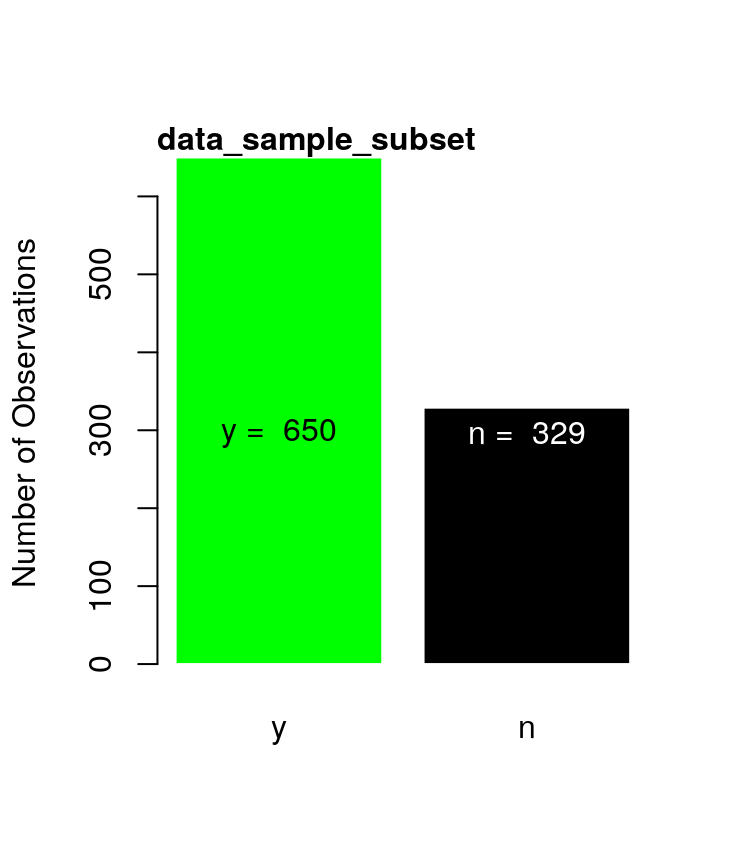
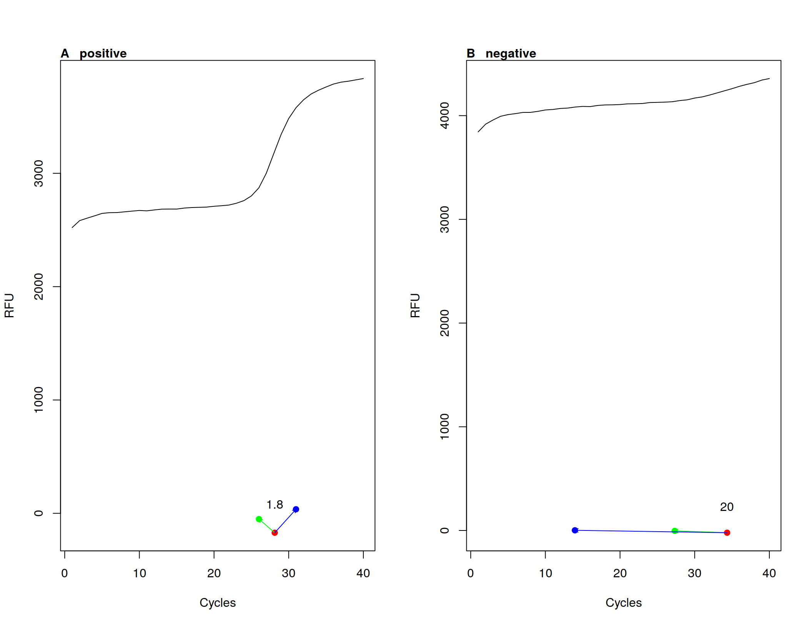

PCRedux Package - An Overview
Stefan Rödiger
2018-09-11
PCRedux.RmdDevelopment, Implementation and Installation
is an open source software package (MIT license) for the statistical computing language . Data with sigmoid curves are common in bioanalytical methods. A widely used bioanalytical method for the detecition and quantification of DNA is the quantitative real-time PCR (qPCR). qPCRs are applied in human diagnostics, life sciences and forensics (Martins et al. 2015, Sauer, Reinke, and Courts (2016)). qPCR amplification curves are an example for sigmoid shaped curves contains function for the calculation of predictors from amplification curves and classified data sets for machine learning applications.
All technical and experimental aspects should be performed under principles that follow good practices of reproducible research. Numerous authors addressed the matter for experimental design and data report. Examples are the Minimum Information for Publication of Quantitative PCR Experiments guidelines (MIQE) and the Real-time PCR Data Markup Language (RDML). MIQE is a recommended standard of the minimum information for publication of quantitative real-time PCR experiments guidelines and RDML is a data exchange format (S. Bustin 2017, Rödiger et al. (2015), Rödiger et al. (2017)).
The development of scientific software is a complex process. In particular, if a developer team works in different time zones with no face-to-face meetings. End users need releases with stable software that delivers reproducible results. Developers need well documented software to modify the software to their needs.
Under the umbrella and , several principles were proposed to deliver high quality software, which meet the needs of end users and developers. This includes version control, collaborative editing, unit testing and continuous integration (Lanubile et al. 2010, Myers et al. (2004), Rödiger et al. (2015)). The following paragraphs describe methods applied for the package.
Version Control and Continuous Integration
The development of the package started 2017 with the submission of a functional, yet immature source code, to GitHub (GitHub, Inc.). GitHub is a web-based version control repository hosting service. Both distributed version control and source code management are based on Git. (Lanubile et al. 2010). Additional functionality of GitHub includes the administration of access management, bug tracking, moderation of predictor requests, task management, some metrics for the software development, and wikis. The source code of is available at:
In continuous integration development team members (incl. coders, artists, translators) can commit and integrate their contributions several times a day. An automated build and test system verifies each integration and gives the development team members a timely feedback about the effect of their commit. In contrast to deferred integration leads this to a reduced number of integration problems and less workload because most errors are solved shortly after they were integrated (Myers et al. 2004).
TravisCI was chosen as continues integration service for . The TravisCI server communicates with the GitHub version control system and manages the package building process. Continuous interaction is available for the releases , and . The history of the build tests are available at:
Naming Convention and Literate Programming
is an (\(\geq\) v. 3.3.3) package, written as object system. has characteristics of object orientated programming but eases the development due to the use of the naming conventions (Brito 2008). In most places functions and parameter names are written as underscore separated (underscore\(\_\)sep), which is a widely used style in packages (Bååth 2012). This convention had to be violated in coding sections where functionality from other packages was used.
By convention, it was specified that functions from the package shall be reported in the form functionname() (e.g., qPCR2fdata()) and functions from other packages in the form functionname() [] (e.g., efficiency(pcrfit()) []).
Literate programming, as proposed by Knuth (1984), is a concept where the logic of the source code and documentation is integrated in a single file. Markup conventions (e. g., ‘#’) tell in literate programming how to typeset the documentation. This produces outputs in a typesetting language such as the lightweight markup language Markdown, or the document preparation system .
The , and packages were used to write the documentation in-line with code for the package.
Installation of the Package
The development version of can be installed using the package.
# Install devtools, if not already installed.
install.packages("devtools")
# Install PCRedux
devtools::install_github("devSJR/PCRedux")is available as stable version from the omprehensive rchive etwork (CRAN) at . Package published at CRAN undergo intensive checking procedures. In addition, CRAN tests whether the package can be built for common operating systems and whether all version dependencies are solved. To install first install (\(\geq\) v. 3.3.3). Then start and type in the prompt:
# Select your local mirror
install.packages("PCRedux")The package should just install. If this failed make sure that write access is permitted to the destination directory and that all package dependencies are met.
# The following command points to the help for download and install of packages
# from CRAN-like repositories or from local files.
?install.packages()If this fails try to follow the instructions given by De Vries and Meys (2012).
R CMD check
Results from CRAN check can be found at
.
Unit Testing of the Package
Modules testing, better known as unit testing, is an approach to simplify the refactoring of source code during software development. Unit Testing is not a guarantee for error-free software. The goal is to minimize errors and regressions. It is also intended to ensure that the numerical results from the calculations are reproducible and of high quality. An unintended behavior of the software should be detected at the latest during the package building process (Myers et al. 2004).
Checkpoints are used to check whether the software performs calculations and data transformations correctly for all builds. For this, numerous (logical) queries have to be defined by the developer in advance. They are refereed to . It should be ensured that as many errors as possible are covered. A logical query can be, for example, whether the calculation has a numeric or Boolean value as output. If the data type is incorrect during output, this is a sufficient termination criterion. Or it can be checked whether the length of the result vector is correct after the calculation. There are different approaches for unit tests in . This also includes testing of units from the packages , , and . (Wickham (2011)).
The package was used in because it could be well implemented and its maintenance is relatively simple. The logic is that an defines how the result, class or error in the corresponding unit (e. g., function) should behave. Unit tests can be found in the /test/testthat subdirectory of the package. They are run automatically during the creation of the package. The following example for the qPCR2fdata() function (for details see ) uses the test_that() [] function with the that:
- an object of the class fdata is created (see Febrero-Bande and Oviedo de la Fuente (2012) for details of the class fdata),
- the parameter
rangevalhas a length of two, - is the second value of parameter
rangeval49 (last cycle number) and *whether the object structure of theqPCR2fdata()function does not change if the parameterpreprocess=TRUEis set.
# Expectations used for the unit testing of the qPCR2fdata() function.
library(PCRedux)
context("qPCR2fdata")
test_that("qPCR2fdata gives the correct dimensions and properties", {
library(qpcR)
res_fdata <- qPCR2fdata(testdat)
res_fdata_preprocess <- qPCR2fdata(testdat, preprocess = TRUE)
expect_that(res_fdata, is_a("fdata"))
expect_that(length(res_fdata$rangeval) == 2 &&
res_fdata$rangeval[2] == 49, is_true())
expect_that(res_fdata_preprocess, is_a("fdata"))
expect_that(length(res_fdata_preprocess$rangeval) == 2 &&
res_fdata_preprocess$rangeval[2] == 49, is_true())
})Further unit tests were implemented for all functions of the package. The coverage by package can be calculated by the package_coverage() [] function (Hester 2018) or visual analyzed via web-interface at:
.
Analysis of Sigmoid Shaped Curves for Data Mining and Machine Learning Applications
The following sections describe the regarding the analysis, numerical description and predictor calculation from a sigmoid curve. A predictor herein refers to a quantifiable informative property of a sigmoid curve. The predictors, sometimes referred to as descriptors, () can be used for applications such as data mining, machine learning and automatic classification (e. g., negative or positive amplification). The determination of quantification points such as the Cq value is a typical task during the analysis of qPCR experiments. This is briefly described in dedicated sections (ff.).
Characteristics of amplification curves that can be used for the statistical and analytical description are discussed () more in detail. The examples described focus on the concepts for binary (dichotomous) classification (Kruppa et al. 2014) as negative or positive. The mere binary classification into classes positive or negative is not necessarily the aim of the package. Instead, it is aimed to provide a tool set for automatic multicategory (polychotomus) classification of amplification curves by any class conceivable. Such classification could be used for the quality of an amplification curve as negative, ambiguous and positive (A & B). A definition for binary (dichotomous) classification and multicategory (polychotomus) classification is presented in Kruppa et al. (2014).
![Examples of negative, ambiguous and positive amplification curves. A) A negative (black), ambiguous (red) and positive (green) amplification curve were selected from the `htPCR` data set. The negative amplification curve is non-sigmoid and has a positive trend. The ambiguous amplification curve is similar to a sigmoidic amplification curve, but shows a positive slope in ground phase (cycle 1 $\rightarrow$ 5). The positive amplification curve (green) is sigmoid. It starts with a flat baseline (cycle 5 $\rightarrow$ 25). This is followed by the exponential phase (cycle 5 $\rightarrow$ 25) and ends in a flat plateau phase (cycle 26 $\rightarrow$ 35). B) Amplification curves of the `vermeulen1` data set were divided into groups with \textit{negative}, \textit{ambiguous} and \textit{positive} classification. Negative amplification curves have a low signal level. Interesting is the spontaneous increase (probably due to a sensor calibration) in cycles 1 to 2 followed by a linear signal decrease. In principle, the ambiguous amplification curves have a sigmoid curve shape. However, the plateau phase is fairly broad. One of the ambiguous amplification curves begins to rise sharply at Cycle 45. The positive amplification curves have a characteristic sigmoid curve shape.](PCRedux_files/figure-html/htPCR_nap-1.png)
Examples of negative, ambiguous and positive amplification curves. A) A negative (black), ambiguous (red) and positive (green) amplification curve were selected from the htPCR data set. The negative amplification curve is non-sigmoid and has a positive trend. The ambiguous amplification curve is similar to a sigmoidic amplification curve, but shows a positive slope in ground phase (cycle 1 \(\rightarrow\) 5). The positive amplification curve (green) is sigmoid. It starts with a flat baseline (cycle 5 \(\rightarrow\) 25). This is followed by the exponential phase (cycle 5 \(\rightarrow\) 25) and ends in a flat plateau phase (cycle 26 \(\rightarrow\) 35). B) Amplification curves of the vermeulen1 data set were divided into groups with , and classification. Negative amplification curves have a low signal level. Interesting is the spontaneous increase (probably due to a sensor calibration) in cycles 1 to 2 followed by a linear signal decrease. In principle, the ambiguous amplification curves have a sigmoid curve shape. However, the plateau phase is fairly broad. One of the ambiguous amplification curves begins to rise sharply at Cycle 45. The positive amplification curves have a characteristic sigmoid curve shape.
Concepts of Machine Learning
Data mining and machine learning can be used for descriptive and predictive tasks during the analysis of complex data sets. Data mining uses specific methods from statistical interference, software engineering and domain knowledge to get a better understanding of the data and to extract hidden knowledge from the pre-processed data (Kruppa et al. 2014, Herrera et al. (2016)). All this implies that a human being interacts with the data at the different stages of the whole process as part of the workflow in data mining. Elements of the data mining process are the pre-processing of the data, the description of the data, the exploration of the data and the search for connections and causes.
The availability of classified amplification curve data sets and technologies for the classification of amplification curves is of high importance to train and validate models. This is dealt with in and , respectively.
For machine learning, the type of learning task is the first thing that needs to be defined. The learning task can be a classification, clustering or regression problem. Next, suitable algorithms can be selected depending on the task. In the case of classification problems it is attempted to predict a discrete valued output. The labels (\(y\)) are usually categorical and represent a finite number of classes (e.g. “negative”, “positive” -> binary classification). With regression tasks, it is attempted to predict a continuously valued output. Clustering is primarily about forming groups (clusters) based on their similarities. Examples are presented in the following and following chapters.
In contrast, machine learning uses instructions and data in software modules to create models that can be used to make predictions on novel data. In machine learning, the human being is much less necessary in the entire process. Processes (algorithms) are used to create models with tunable parameters. These models automatically adapt their performance to the information (predictors) from the data. Well-known examples of machine learning technologies are Decision Trees (DT), Boosting, Random Forests (RF), Support Vector Machines (SVM), generalized linear models (GLM), logistic regression (LR) and deep neural networks (DNN) (Lee 2010). The three following concepts of machine learning are frequently described in the literature:
Supervised learning: These algorithms (e. g., SVM, DT, RF) learn from a training data set of labeled and annotated data (e. g., “positive” and “negative”). Classified training data can be created by one or more individuals. It is used for building a generalized model of all data. These algorithms use error or reward signals to evaluate the quality of a solution found (Bischl et al. 2010, Greene et al. (2014), Igual and Seguí (2017)). Binomial logistic regression (also referred to as logit regression or logit model) is used to gain knowledge about a binary relationship, by fitting a regression model \(y = f(x)\). \(y\) is a categorical variable with two states (negative \(\rightarrow 0\), positive \(\rightarrow 1\)). Typically, this model is used for predicting \(y\) with a mixture of \(n\) continuous and categorical predictors (features) \(x_{i1}, \ldots, x_{k1}, (i = 1, \ldots, n)\).
The logit model is a robust and versatile classification method to explain a dependent binary variable. Their codomain of real numbers is limited to [0,1]. Probabilities can therefore be utilized. The logistical distribution function \(F(\eta)\), also known as the response function, is strictly monotone increasing and limited to this range.
\(\eta_{i}\) establishes the link between the probability of the occurrence and the independent variables. For this reason, \(\eta_{i}\) is referred to as a link function. The distribution function of the normal distribution is an alternative to the logistical distribution function. By using the normal distribution, the Probit model is obtained. However, since this is more difficult to interpret, it is less widely used in practice. Since probabilities are used, it is possible to make a prediction about the probability of occurrence of an event.
When analyzing amplification curves, diagnosis can be made whether a reaction was unsuccessful (0) or successful (1). For the prediction independent metric variables (predictors) are used. The metric variables have interpretable distances with a defined order. Their codomain is [-\(\infty\),\(\infty\)]. The logistic distribution function on the independent variables determines the probability for \(Y_{i} = 0\) or \(Y_{i} = 1\). A logistic regression model can be formulated as follows:
\(F(\eta)=\frac{1}{1+exp(-\eta)}\)
The logistic regression analysis is based on the maximum-likelihood estimation (MLE). In contrast to linear regression, the probability for \(Y=1\) is not modeled from explanatory variables. Rather, the logarithmic chance (logit) is used for the occurrence of \(Y=1\). The term chance refers to the ratio of the probability of occurrence of an event (e. g., amplification curve is positive) and the counter-probability (e. g., amplification curve is negative) of an event.
Unsupervised learning: Algorithms, such as k-means clustering, kernel density estimation, LDA or PCA learn from training data sets of unlabeled or non-annotated data to find hidden structures according to geometric or statistical criteria (Bischl et al. 2010, Greene et al. (2014), Igual and Seguí (2017)).
Reinforcement Learning: The algorithms learn by reinforcement from criticism. The criticisms inform the algorithm about the quality of the solution found but nothing about how to improve. These algorithms search by iterations the improved solution in the entire solution space (Bischl et al. 2010, Igual and Seguí (2017)).
Why is there is need for the software?
The binary classification of an amplification curve is feasible using bioanalytical methods such as melting curve analysis (Rödiger, Böhm, and Schimke 2013) or electrophoretic separation (Westermeier 2004). However, this is not always possible or desirable.
- Melting curve analysis is used in some qPCRs as a post-processing step to identify samples, which contain the specific target sequence (positive) based on a specific melting temperature. However, some detection probe systems like hydrolysis probes do not permit such classification. Moreover, nucleic acids with similar biochemical properties but different sequences may have the same melting temperature.
- An electrophoretic separation (classification of target DNA sequences by size and quantity) often requires too much effort for experiments with high sample throughput.
- There are mathematical qPCR analysis algorithms such as (J M Ruijter et al. 2009) that require information on whether an amplification curve is negative or positive for subsequent calculation.
- Raw data of amplification curves can be fitted with sigmoid functions. Sigmoid functions are non-linear, real-valued, have an S-shaped curvature () and be differentiated (e. g., first derivative maximum, with one local minimum and one local maximum). With the model obtained, predictions can be made. For example, the position of the second derivative maximum can be calculated from this (). In the context of amplification curves, the second derivative maximum is commonly used to describe the relationship between the cycle number and the PCR product formation (). All softwares assume that the amplification resemble a sigmoid curve shape (ideal positive amplification reaction), or a flat low line (ideal negative amplification reaction). For example, Ritz and Spiess (2008) published the package that contains functions to fit several multi-parameter models. This includes the five-parameter Richardson function (Richards 1959) (). The package (Ritz and Spiess 2008) contains an amplification curve test via the
modlist()function. The parametercheck="uni2"offers an analytical approach, as part of a method for the kinetic outlier detection. It tries to checks for a sigmoid structure of the amplification curve. Thenmodlist()tests for the location of the first derivative maximum and the second derivative maximum. However, multi-parameter functions fit “successful” in most cases including noise and give false positive results. This will be shown in later sections. This is exemplary shown in later sections in combination with theamptester()[] function (Rödiger, Burdukiewicz, and Schierack 2015). This function uses static thresholds and frequentist inference to identify amplification curves that exceed the threshold (\(\mapsto\) classified as positive). However, the analysis can also lead to false-positive classifications as exemplified in the example below and in . Therefore, additional classification concepts would be beneficial.
# Load the qpcR package for the model fit.
library(qpcR)
library(chipPCR)
# Select one positive and one negative amplification curve from the PCRedux
# package.
amp_data <- PCRedux::RAS002[, c("cyc", "A01_gDNA.._unkn_B.Globin",
"B07_gDNA.._unkn_HPRT1")]
colnames(amp_data) <- c("cyc", "positive", "negative")
# Arrange graphs in an matrix and set the plot parameters. An plot the positive
# and negative amplification curve.
hight <- c(3100, 4100)
plot(NA, NA, xlim = range(amp_data[, "cyc"]),
ylim = range(amp_data[, c("positive", "negative")]),
xlab = "Cycles", ylab = "RFU", main = "")
# Apply the amptester() function from the chipPCR package to the amplification
# curve data and write the results to the main of the plots.
for (i in 2:3) {
res.ampt <- suppressMessages(amptester(amp_data[, i]))
# Make a logical connection by two tests (shap.noisy, lrt.test and
# tht.dec) of amptester to decide if an amplification reaction is
# positive or negative.
decision <- ifelse(!res.ampt@decisions[1] &&
res.ampt@decisions[2] &&
res.ampt@decisions[4],
"positive", "negative"
)
# The amplification curves were fitted (l7 model) with pcrfit() function.
# The Cq was determined with the efficiency() function.
fit <- pcrfit(data = amp_data, cyc = 1, fluo = i, model = l7)
res <- efficiency(fit, plot = FALSE)
lines(predict(fit), pch = 19, lty = 1, xlab = "Cycles", ylab = "RFU",
main = "", col = i - 1)
abline(h = res[["fluo"]], col = "grey")
points(res[["cpD2"]], res[["fluo"]], pch = 19)
legend(1, hight[i-1], paste0(colnames(amp_data)[i],
" curve -> Decision: ",
decision, " Cq: ", res[["cpD2"]]),
bty = "n", cex = 1, col = "red"
)
}![Incorrect model adjustment for amplification curves. A positive (black) and a negative amplification curve (red) were randomly selected from the `RAS002` data set. The positive amplification curve has a baseline signal of about 2500 RFU and has a definite sigmoidal shape. The negative amplification curve has a baseline signal of approx. 4200 RFU, but only moderately positive slope (no sigmoidal shape). A logistic function with seven parameters (`l7`) has been fitted to both amplification curves. A Cq value of 25.95 was determined for the positive amplification curve. The negative amplification curve had a Cq value of 9.41. However, it can be seen that the latter model fitting is not appropriate for calculating a trustworthy Cq value. An automatic calculation without user control would give a false-positive result.](PCRedux_files/figure-html/curve_fit_fail-1.png)
Incorrect model adjustment for amplification curves. A positive (black) and a negative amplification curve (red) were randomly selected from the RAS002 data set. The positive amplification curve has a baseline signal of about 2500 RFU and has a definite sigmoidal shape. The negative amplification curve has a baseline signal of approx. 4200 RFU, but only moderately positive slope (no sigmoidal shape). A logistic function with seven parameters (l7) has been fitted to both amplification curves. A Cq value of 25.95 was determined for the positive amplification curve. The negative amplification curve had a Cq value of 9.41. However, it can be seen that the latter model fitting is not appropriate for calculating a trustworthy Cq value. An automatic calculation without user control would give a false-positive result.
- The analysis and classification of sigmoid data (e. g., quantitative PCR) it is a manageable task if the data volume is low, or dedicated analysis software is available. An example for a low number of amplification curves is shown in A. All 65 curves exhibit a sigmoid curve shape. It is trivial to classify them as positive by hand. In contrast, the vast number of amplification curves in B is barely manageable with a reasonable effort by simple visual inspection. These data originate from a high-throughput experiment that encompasses in total 8858 amplification curves of which only 200 are shown. A manual analysis of the data is time-consuming and prone to errors. Even for an experienced user it is difficult to classify the amplification curves unambiguously and reproducible as will be later shown in .
- qPCRs are performed in thermo-cyclers, which are equipped with a real-time monitoring technology. There are numerous commercial manufactures, which produce thermo-cyclers (). An example for a thermo-cycler that originated in scientific project is the VideoScan technology (Rödiger et al. 2013). Most of the thermo-cyclers have a thermal block with wells at certain positions. Reaction vessels containing the PCR mix are inserted into the wells. There are also thermo-cyclers that use capillary tubes that are heated and cooled by air (e. g., Roche Light Cycler 1.0). The thermo-cycler raises and lowers the temperature in the reaction vessels in discrete, pre-programmed steps so that the PCR can take place. Instruments with a real-time monitoring functionality have sensors to measure changes of the fluorescence intensity in the reaction vessel. All thermo-cycler systems use software to processes the amplification curves. Plots of the fluorescence observations versus cycle number obtained from two different qPCR systems is shown in A and B. The thermo-cyclers produce different amplification curve shapes even with the same sample material and PCR mastermix because of their technical design, sensors, and software. These factors need to be taken into account during the development of analysis algorithms.

- Model function of a one-parameter sigmoid function. B) Model function of a sigmoid function with an intercept \(n\) = 0.2 RFU (shift in base-line). C) Model function of a sigmoid function with an intercept (\(n\) 0.2 RFU) and a square portion \(m * x^{2}, m = -0.0005, n = 0.2 RFU\) (hook-effect-like). D) Model function of a sigmoid function with an intercept (\(n\)) and a square portion of \(m * x^{2}\) and additional noise \(\epsilon\) (normal distributed, \(\mu = 0.01, \sigma = 0.05\)).

Amplification curve data from an iQ5 (Bio-Rad) thermo-cycler and a high throughput experiment in the Biomark HD (Fluidigm). A) The C127EGHP data set with 64 amplification curves was produced in conventional thermo-cycler with a 8 x 12 PCR grid. B) The htPCR data set, which contains 8858 amplification curves, was produced in a 95 x 96 PCR grid. Only 200 amplification curves are shown. In contrast to A) have all amplification curves in B) an off-set (intercept) between 0.09 and 0.40 RFU.
Software for the Analysis of Amplification Curve Data
There are several open source and closed source software tools for the analysis of qPCR data (Pabinger et al. 2014). The software packages deal for example with
- missing values and non-detects (McCall et al. 2014),
- noise and artifact removal (Rödiger, Burdukiewicz, and Schierack 2015, Rödiger et al. (2015), Spiess et al. (2015), Spiess et al. (2016)),
- inter run calibration (Jan M. Ruijter et al. 2015),
- normalization (Rödiger, Burdukiewicz, and Schierack 2015, Jan M. Ruijter et al. (2013), Feuer et al. (2015), Matz, Wright, and Scott (2013)),
- quantification cycle estimation (Ritz and Spiess 2008, Jan M. Ruijter et al. (2013)),
- amplification efficiency estimation (Ritz and Spiess 2008, Jan M. Ruijter et al. (2013)),
- data exchange (Lefever et al. 2009, Perkins et al. (2012), Rödiger et al. (2017)),
- relative gene expression analysis (Dvinge and Bertone 2009, Pabinger et al. (2009), Neve et al. (2014)) and
- data analysis pipelines (Pabinger et al. 2009, Ronde et al. (2017), Mallona, Weiss, and Egea-Cortines (2011), Mallona et al. (2017)).
However, a bottleneck of qPCR data analysis is the lack of predictors and software to build classifiers for amplification curves. A classifier herein refers to a vector of predictors that can be used to distinguish the amplification curves by their shape only. A predictor, also referred to as feature, is an entity that characterizes an object. A few potential predictors for amplification curves are described in the literature. These include:
- the starting point (takeoff) of the amplification curve,
- the Cq value and amplification efficiency, and
- the signal level (e.g., slope and intercept of the ground phase).
These alone are presumably not enough to describe amplification curves sufficiently. The number of predictors should be large enough to describe the object accurately and small enough not to interfere with the learning process with redundant or information. There are no references of algorithms in the scientific literature for the calculation of additional predictors from amplification curves. This makes studies on machine learning and modeling difficult.
Principles of Amplification Curve Data Analysis and Predictor Calculation
The shape of a positive amplification curve has in most cases a sigmoid shape. Many factors, such as the sample quality, qPCR chemistry, and technical problems (e. g., sensor errors) contribute to various curve shapes (Jan M. Ruijter et al. 2014). The curvature of the amplification curve can be used as a quality measure. For example, fragmentation, inhibitors and sample material handling errors during the extraction can be identified. The kinetic of fluoresce emission is proportional to the quantity of the synthesized DNA. Typical amplification curves have three phases.
- Ground phase: This phase occurs during the first cycles of the PCR. The fluorescence emission is in most cases flat. During the ground phase, only a weak and flat fluorescence signal is generated. Noise but no product formation is detected by the sensor system. The PCR product signal is an insignificantly small component of the total signal. This is often referred to as base-line or background signal. Apparently, there is only a phase shift or no signal at all. This is primarily due to the limited sensitivity of the instrument. Even in a perfect PCR reaction (double amplification per cycle), qPCR instruments cannot detect the fluorescence signal from the amplification. Fragmentation, inhibitors and sample handling errors would result in a prolonged ground phase. Nevertheless, this may indicate some typical properties of the qPCR system or probe system. In many instruments, this phase is used to determine the base-line level for the calculation of the Cycle threshold (Ct). The Ct value is considered statistically relevant increase outside the noise range. A signal that is far enough above this threshold is considered coming from the amplicon. In some qPCR systems a flat amplification signal is expected in this phase. Slight deviations from this trend are presumably due to changes (e. g., disintegration of probes) in the fluorophores. Background correction algorithms are often used here to ensure that flat amplification curves without slope are generated. However, this can result in errors and inevitably leads to a loss of information via the waveform of the raw data (Nolan, Hands, and Bustin 2006). The slope, level and variance of this phase can serve as predictors.
-
Exponential phase: This phase follows the ground phase and is also called log phase. This phase is characterized by a strong increase of the emitted fluorescence. In this phase, the DNA amount doubles in each cycle under ideal conditions. The amount of the synthesized fluorescent labeled PCR product is high enough to be detected by the sensor system. This phase is used for the calculation of the quantification point (Cq) and for the calculation of the curve specific amplification efficiency. The most important measurement from qPCRs is the cycle of quantification (Cq), which signifies at which PCR cycle the fluorescence exceeds a
threshold value. There is an ongoing debate as to what a significant and robust threshold value is. An overview and performance comparison of Cq methods is given in Jan M. Ruijter et al. (2013). There are several mathematical methods to calculate the Cq.- The ‘classical’ threshold value (cycle threshold, Ct) is the intersect between a manually defined straight horizontal line with the quasi-linear phase in the exponential amplification phase (A & B). This simple to implement method requires that amplification curves are properly base-lined prior to the analysis. The Ct method makes the assumption that the amplification efficiency (~ slope in the log-linear phase) is equal across all amplification curves compared (Jan M. Ruijter et al. 2013). Evidently, this is not always case as exemplified in C. The Ct method is widely used presumably due to the familiarity of users with this approach (e.g., chemical analysis procedures). However, this method is statistically unreliable (Jan M. Ruijter et al. 2013, Spiess et al. (2015), Spiess et al. (2016)). Moreover, the Ct method gives no stable in predictions if different users are given the same data set to be analyzed. Therefore, this method is not used within the package.
- Another Cq method uses the maximum of second derivative (SDM) (Rödiger et al. 2015) (C). In all cases the Cq value can be used to calculate the concentration of target sequence in a sample (low Cq high target concentration). In contrast, negative or ambiguous amplification curves loosely resemble noise. This noise may appear linear or exhibit an curvature similar to a specific amplification curve (). This however, may result in faulty interpretation of the amplification curves. Fragmentation, inhibitors and sample handling errors would decrease the slop of the amplification curve (Spiess, Feig, and Ritz 2008, Ritz and Spiess (2008)). The slope and variation can be considered as predictors. Since the Cq depends on the initial template amount, and the amplification efficiency there is no immediate use of the Cq as predictor.
- Plateau phase: This phase follows the exponential phase. The cause for this lies in the exploitation of the limited resources (incl. primers, nucleotides, enzyme activity) in the reaction vessel. This limits the amplification reaction, so that the theoretical maximum amplification efficiency (doubling per cycle) no longer prevails. This turning point and the progressive limitation of resources finally leads to a plateau. In the plateau phase, there is sometime a signal decrease called hook effect ( and (Barratt and Mackay 2002, Isaac (2009))). The slope (hook effect), level and variation can be considered as predictors.
If the amplification curve has only a slight positive slope and no perceptible exponential phase, it can be assumed that the amplification reaction did not occur (B). Causes may include poor specificity of the PCR primers (non-specific PCR products), degraded sample material, degraded probes or detector failures. If a lot of input DNA is present in a sample, the amplification curve starts to increase in early PCR cycles (1 - 12 cycles). Some PCR devices have software that corrects this data without checking it. This results in an amplification curve with a negative trend.
The discussed phases are considered as regions of interest (ROI). As an example, the is in the head area, while the is in the tail area. The is located between these two ROIs.
![Phases of application curves as Region of Interest (ROI). For amplification curves, the fluorescence signal (RFU, relative fluorescence units) of the reporter dye is plotted against the cycle number. Positive amplification curves have the three ROIs: ground phase, exponential phase and plateau phase. These ROIs can be used to determine predictors such as the takedown point (`tdp`) or the standard deviation within the ground phase (`sd\_bg`). The exponential range (red dots) is used to determine the Cq values and amplification efficiency (not shown). A linear regression model (red) can be used to calculate the slope in this region. B) PCRs without amplification reaction usually show a flat (non-sigmoides) signal. C) The exponential phase of PCR reactions can vary greatly depending on the DNA starting quantity and other factors. Amplification curves that appear in later cycles often have a lower slope in the exponential phase.](PCRedux_files/figure-html/amplification_curve_ROI-1.png)
Phases of application curves as Region of Interest (ROI). For amplification curves, the fluorescence signal (RFU, relative fluorescence units) of the reporter dye is plotted against the cycle number. Positive amplification curves have the three ROIs: ground phase, exponential phase and plateau phase. These ROIs can be used to determine predictors such as the takedown point (tdp) or the standard deviation within the ground phase (sd\_bg). The exponential range (red dots) is used to determine the Cq values and amplification efficiency (not shown). A linear regression model (red) can be used to calculate the slope in this region. B) PCRs without amplification reaction usually show a flat (non-sigmoides) signal. C) The exponential phase of PCR reactions can vary greatly depending on the DNA starting quantity and other factors. Amplification curves that appear in later cycles often have a lower slope in the exponential phase.
The amplification curve shape, the amplification efficiency and the Cq value are important measures to judge the outcome of a qPCR reaction. In all phases of PCR the curves should be smooth. Possible artifacts in the curves may be due to unstable light sources from the instrument or problems during sample preparation, such as the presence of bubbles in the reaction vessel, incorrectly assigned dye detectors, errors during the calibration of dyes for the instrument, errors during the preparation of the PCR master mix, sample degradation, lack of a sample in the PCR, too much sample material in the PCR mix or a low detection probe concentration (J M Ruijter et al. 2009, Jan M. Ruijter et al. (2014), Spiess et al. (2015)). Smoothing and filtering cause alterations to the raw data that affects the Cq value and the amplification efficiency.
Most commercial qPCR systems do not display the raw data of the amplification curves on the screen. Instead, raw data are often processed by the instrument software to remove fluorophore-specific effects and noise in all ROI’s. Commonly employed pre-processing step of qPCR is smoothing and filtering to remove noise. Noise in amplification curves can have different causes (Spiess et al. 2015).
The ordinate often does not display the measured fluorescence, but rather the change in fluorescence per cycle (\(\varDelta RFU = RFU_{cycle + 1} - RFU_{cycle}\)). Some qPCR systems have a periodicity in the amplification curve data. Periodicity exposes the risk of introducing artificially shifts in the Cq values (Spiess et al. 2016).
In particular the cycle threshold method (Ct method) () is affected by these factors (Spiess et al. 2015, Spiess et al. (2016)). Therefore, it is advisable to clarify beforehand, which processing steps the amplification curves have been subjected to. Failure to do so may result in misinterpretations and incorrect amplification curve fitting models (Nolan, Hands, and Bustin 2006, Rödiger et al. (2015), Rödiger, Burdukiewicz, and Schierack (2015), Spiess et al. (2015)).
![Frequently used methods for the analysis of quantification points. A) The amplification curve is intersected by a grey horizontal line. This is the background signal (3$\sigma$) determined from the \textit{68-95-99.7 rule} from the fluorescence emission of cycles 1 to 10. The black horizontal line is the user-defined threshold (Ct value) in the exponential phase. Based on this, the cycle at which the amplification curve differs significantly from the background is calculated. B) The amplification curve can also be analyzed by fitting a multi-parametric model (black line, five parameters). The red line is the first derivative of the amplification curve with a maximum of 17.59 cycles. The first derivative maximum (`cpD1`) is used as a quantification point (Cq value) in some qPCR systems. The green line shows the second derivative of the amplification curve, with a maximum at 15.68 cycles a minimum at 19.5 cycles. The maximum of the second derivative (`cpD2`) is used as Cq value in many systems. The blue line shows the amplification efficiency estimated from the trajectory of the exponential region. The `Eff` value of 1.795 means that the amplification efficiency is approximately 89\%. `cpDdiff` is the difference between the first and second derivative maximum ($cpDdiff = cpD1 - cpD2$).](PCRedux_files/figure-html/figure_quntifcation_points-1.png)
Frequently used methods for the analysis of quantification points. A) The amplification curve is intersected by a grey horizontal line. This is the background signal (3\(\sigma\)) determined from the from the fluorescence emission of cycles 1 to 10. The black horizontal line is the user-defined threshold (Ct value) in the exponential phase. Based on this, the cycle at which the amplification curve differs significantly from the background is calculated. B) The amplification curve can also be analyzed by fitting a multi-parametric model (black line, five parameters). The red line is the first derivative of the amplification curve with a maximum of 17.59 cycles. The first derivative maximum (cpD1) is used as a quantification point (Cq value) in some qPCR systems. The green line shows the second derivative of the amplification curve, with a maximum at 15.68 cycles a minimum at 19.5 cycles. The maximum of the second derivative (cpD2) is used as Cq value in many systems. The blue line shows the amplification efficiency estimated from the trajectory of the exponential region. The Eff value of 1.795 means that the amplification efficiency is approximately 89%. cpDdiff is the difference between the first and second derivative maximum (\(cpDdiff = cpD1 - cpD2\)).
Technologies for Amplification Curve Classification and Classified Amplification Curves
Many machine learning concepts exist. One method is supervised machine learning, where the goal is to derive a property from user-defined (classified) training data. Categories such as negative, ambiguous or positive are assigned depending on the form of the amplification curve. An extensive literature research showed that there are no openly accessible classified amplification curve data sets. Open Data is meant in the sense that data are freely available, free of charge, free to use and that data can be republished, without restrictions from copyright, patents or other mechanisms of control (Kitchin 2014).
Therefore, a large number of records with amplification curves and their classification (negative, ambiguous, positive) were added to the package.
For the amplification curves in , a dichotomous classification was performed (roughly sigmoid or negative amplification reaction with a flat curve shape). Consequently, this does not rule out
- if a specific amplification product has been synthesized,
- if a contamination has been amplified or
- if only primer-dimers have been amplified.
To answer this question, other methods such as agarosegel electrophoresis need to be used.
Manual Amplification Curve Classification
For machine learning and method validation it was important to classify the amplification curves individually. In Rödiger, Burdukiewicz, and Schierack (2015) the humanrater() [] function was described. This function was developed to help the user during the classification of amplification curves and melting curves. The user has to define classes, which get assigned to an amplification curve after expert has entered the class in input mask.
By convention, class labels were specified as e. g., negative (“n”), ambiguous (“a”), positive (“y”) in the package.
All amplification curve data sets listed in were classified in interactive, semi-blinded sessions. humanrater() [] was set to randomly select individual amplification curves. All data sets were manually classified at least three times. The htPCR data set (B) was in total classified eight times (see ). Most of the amplification curves are neither unequivocal classifiable as positive or negative.
# Suppress messages and load the packages for reading the data of the classified
# amplification curves.
library(PCRedux)
# Load the decision_res_htPCR.csv data set from a csv file.
filename <- system.file("decision_res_htPCR.csv", package = "PCRedux")
decision_res_htPCR <- data.table::fread(filename, data.table = FALSE)
# Create graphic device for the plot(s)
par(mfrow = c(2, 4))
for (i in 2L:9) {
data_tmp <- table(as.factor(decision_res_htPCR[, i]))
barplot(data_tmp, col = adjustcolor("grey", alpha.f = 0.5),
xlab = "Class", ylab = "Counts", border = "white")
text(c(0.7, 1.9, 3.1), rep(quantile(data_tmp, 0.25), 3),
data_tmp, srt = 90)
mtext(LETTERS[i - 1], cex = 1, side = 3, adj = 0, font = 2)
}![Variations of the classification of amplification curves. A prerequisite for the development of machine-learning models is the availability of manually classified amplification curves. Amplification curves (n = 8858) from the `htPCR` data set have been classified by one user eight times at different points over time (classes: ambiguous (a), positive (y) or negative (n)). During this process, the amplification curves were presented in random order. The example shows that different (subjective) class mappings may occur for the same data set. While only a few amplification curves were classified as negative in the first three classification cycles (A-C), their proportion increased almost tenfold in later classification cycles (D-H).](PCRedux_files/figure-html/figure_curve_classification-1.png)
Variations of the classification of amplification curves. A prerequisite for the development of machine-learning models is the availability of manually classified amplification curves. Amplification curves (n = 8858) from the htPCR data set have been classified by one user eight times at different points over time (classes: ambiguous (a), positive (y) or negative (n)). During this process, the amplification curves were presented in random order. The example shows that different (subjective) class mappings may occur for the same data set. While only a few amplification curves were classified as negative in the first three classification cycles (A-C), their proportion increased almost tenfold in later classification cycles (D-H).
This approach is well suited and has been applied to classify a variety of amplification curves during the development of the package. From experience this is time-consuming and tiring for large data sets, especially when the amplification curves are similar in shape. A high similarity between amplification curves exists, for example, in replicates and negative controls.
tReem() - A Function for Shape-based Group-wise Classification of Amplification Curves
The similarity of amplification curves can be used to form groups of similar shapes. The amplification curves in the groups can then be classified in a bulk. In this way, a higher throughput can be achieved. This concept has not been described for the analysis of qPCR data in the literature.
The tReem() function was developed to perform a shape-based group classification. To use the tReem() function, the first column must contain the qPCR cycles and all subsequent columns must contain the amplification curves. Two measures of similarity are used within the tReem() function.
In the first measure (default), the Pearson correlation coefficients (r) are determined in pairs for all combinations of the amplification curves. The correlation coefficient is a statistical measure to describe the strength of the correlation between two or more variables. The correlation coefficient r is regarded as distance between the amplification curves. r is a dimensionless value and only takes values between -1 and 1. If r = -1, there is a maximum reciprocal relationship. If r = 0 there is no correlation between the two variables. If r = 1, there is a maximum rectified correlation.
In the second measure, the Hausdorff distance is used to determine the similarity between amplification curves. The Hausdorff distance is “the maximum of the distances from a point in any of the sets to the nearest point in the other set” (Rote 1991, Herrera et al. (2016)). The amplification curves are converted within the
tReem()function using theqPCR2data()function.
Both methods process the distances in the same steps. This involves the calculation of the distance matrix using the Euclidean distances of all distance measures to determine the distance between the lines of the data matrix.
This is used to perform a hierarchical cluster analysis. In the last step, the cluster is divided into groups based on a user-defined k value. For example, two groups are created for k = 2. If the amplification curves shapes are highly diverse, a larger k should be used. After a chain of processing steps presents the tReem() function a series of plots with grouped of amplification curves. The corresponding classes can then be assigned to the groups of amplification curves by the user using an input mask.
Grouping the amplification curves with the Pearson correlation coefficient as a distance measure is usually faster than the Hausdorff distance. The Hausdorff distance is an approximation of a shape metrics to define similarity measures between shapes. (Charpiat, Faugeras, and Keriven 2003).
# Classify amplification curve data by correlation coefficients (r)
data <- qpcR::testdat
classification_result <- tReem(data[, 1:15], k = 3)
classification_result
decision_modus() - A Function to Get a Decision (Modus) from a Vector of Classes
For the systematic statistical analysis of classification data sets, the decision_modus() function has been developed. This allows the most common decision (mode) to be determined. The mode is useful to consolidate large collections of different decisions into a single (most frequent) decision.
Observed:a, a, a, a, a, n, n, n \(\rightarrow\) frequencies 5 x a, 3 x n \(\rightarrow\) mode: a. Since the class names are known, they only have to be interpreted by the user (e. g., “a”,n,“y” -> “ambivalent”,“negative”,“positive”).
A manual classification was performed out for the htPCR data set (for an example plot B) with the humanrater() function. The classification of each amplification curve was performed eight times at different time points since many of the amplification curves did not resemble optimal curvatures (e.g., ). It is likely that the amplification curve (P06.W47, ) is considered as ambiguous or even positive (positive \(\leftrightarrow\) ambivalent) by the users.
shows from a total of 8858 amplification curves the first 25 lines classified as negative (conformity=TRUE) and the first 25 lines classified as positive. Since in total, the curves were classified eight times (test.result.1 \(\ldots\) test.result.8) a whole of 70864 amplification curves was analysed. In this classification experiment the amplification curves have been classified differently in 94.5% of the cases (e. g., line 1 “P01. W01”).
The decision_modus() function was applied to the record decision_res_htPCR.csv with all classification rounds (columns 2 to 9) and the mode was determined for each amplitude curve .
# Use decision_modus() to go through each row of all classification done by
# a human.
# Determine the number of observations where all classifications were
# the same (conformity == TRUE).
conformity <- decision_res_htPCR[["conformity"]]
# List all classifications.
dec <- lapply(1L:nrow(decision_res_htPCR), function(i) {
decision_modus(decision_res_htPCR[i, 2:9])[1]
}) %>% unlist()
# Show statistic of the decisions
summary(dec)## a n y
## 1266 4264 3328![Frequency of amplification curve classes and conformity in the `htPCR` data set. The `htPCR` data set was classified by hand eight times. Due to the unusual amplification curve shape and input errors during classification, many amplification curves were classified differently. A) Frequency of negative (black), ambiguous (red) and positive (green) amplification curves in the `htPCR` data set. The combined number of ambiguous and negative amplification curves appears to be higher, than the number of positive amplification curves. B) The number of observations where all classification cycles made the same decision (conformity == TRUE) accounts for only 5\% of the total number of observations. TRUE, all classes of the amplification curve matched. FALSE, at least one in eight observations had a different class.](PCRedux_files/figure-html/htPCR_nap_frequency-1.png)
Frequency of amplification curve classes and conformity in the htPCR data set. The htPCR data set was classified by hand eight times. Due to the unusual amplification curve shape and input errors during classification, many amplification curves were classified differently. A) Frequency of negative (black), ambiguous (red) and positive (green) amplification curves in the htPCR data set. The combined number of ambiguous and negative amplification curves appears to be higher, than the number of positive amplification curves. B) The number of observations where all classification cycles made the same decision (conformity == TRUE) accounts for only 5% of the total number of observations. TRUE, all classes of the amplification curve matched. FALSE, at least one in eight observations had a different class.
Another usage mode of decision_modus() is to set the parameter as max_freq=FALSE. This option specifies the number of all classifications.
library(PCRedux)
# Decisions for observation P01.W06
res_dec_P01.W06 <- decision_modus(decision_res_htPCR[
which(decision_res_htPCR[["htPCR"]] == "P01.W06"),
2L:9
], max_freq = FALSE)
print(res_dec_P01.W06)## variable freq
## 1 a 3
## 2 n 5The amplification curve P01. W06 was classified as a=3 times and as n=5 times. Therefore, the decision would turn into a negative decision.
Classified Amplification Curve Datasets
Amplification curves from different sources (e.g., detection chemistries, thermo-cyclers) were manually classified with the humanrater() function () or with the tReem() function (). Raw amplification curve data were exported as comma separated values or in the Real-time PCR Data Markup Language (RDML) format via the package. RDML is human readable data exchange format for qPCR experiments. A detailed description can be found in Rödiger et al. (2017). The following code section describes the import of an RDML file from the package. The RDML file contains amplification curve data of a duplex qPCR (HPV 16 & HPV 18) performed in the CFX96 (Bio-Rad).
library(RDML)
# Load the RDML package and use its functions to import the amplification curve
# data
library(RDML)
filename <- system.file("RAS002.rdml", package = "PCRedux")
raw_data <- RDML$new(filename = filename)The following example shows the export of the RAS002.rdml file from the RDML format to the csv format.
# Export the RDML data from the PCRedux package as the objects RAS002 and RAS003.
library(RDML)
library(PCRedux)
library(data.table)
RAS002 <- data.frame(RDML$new(paste0(
path.package("PCRedux"), "/", "RAS002.rdml"))$GetFData()
)
# The obbject RAS002 can be stored in the working directory as CSV file with
# the name RAS002_amp.csv.
write.csv(RAS002, "RAS002_amp.csv", row.names = FALSE)| RDML data file | Device | Target gene | Detection chemistry |
|---|---|---|---|
| RAS002.rdml | CFX96 | HPV16, HPV18, HPRT1 | Taqman |
| RAS003.rdml | CFX96 | HPV16, HPV18, HPRT1 | Taqman |
| hookreg.rdml | Bio-Rad | various | Taqman, DNA binding dyes |
Data Analysis Functions of the Package
The package contains functions for analyzing amplification curves. In the following, these are distinguished into helper functions () and analysis functions ().
Helper Functions of the Package
performeR() - Performance Analysis for Binary Classification
Statistical modeling and machine learning is powerful but expose a risk to the user by introducing an unexpected bias. This may lead to an overestimation of the performance. The assessment of the performance by the sensitivity and specificity is fundamental to characterize a classifier or screening test (G. James et al. 2013). Sensitivity is the percentage of true decisions that are identified and specificity is the percentage of negative decision that are correctly identified (). An example for the application of the performeR() function is shown in .
qPCR2fdata() - A Helper Function to Convert Amplification Curve Data to the fdata Format
qPCR2fdata() is a helper function to convert amplification curve data to the functional fdata class (Febrero-Bande and Oviedo de la Fuente 2012). The fdata format is used for functional data analysis to determine the similarity measures between amplification curves shapes by the Hausdorff distance. Similarity herein refers to the difference in spatial location of two (e. g., amplification curves). Objects with a close distance are presumably more similar. For single objects (e. g., points) one can use a vector distance, such as the Euclidean distance (Herrera et al. 2016).
The qPCR2fdata() function takes a data.frame containing the amplification cycles (first column) and the fluorescence amplitudes (subsequent columns) as input.
Noise and missing values may affect the analysis adversely. Therefore, an instance of the CPP() [] function (Rödiger, Burdukiewicz, and Schierack 2015) was integrated in qPCR2fdata(). If in qPCR2fdata(), then all curves are smoothed (Savitzky-Golay smoother), missing values are imputated and outliers in the ground phase get removed as described in Rödiger, Burdukiewicz, and Schierack (2015).
The following example illustrates a hierarchical cluster analysis the testdat data set. The amplification curves of the testdat data set remained as raw data or were pre-processed (smoothed). Subsequent, the amplification curves were converted by the qPCR2fdata(). The converted data were subjected to a cluster analysis (Hausdorff distance). This method uses the elements of a proximity matrix to generate a dendrogram. The dendrogram can can be used to further analyze the clusters. There are methods to determine the number of clusters automatically (Cook and Swayne 2007). However, for simplicity the number of clusters was determined visually.
The distance based on the Hausdorff metric was already done the next steps involved the cutree() [] function to split the dendrogram into smaller junks. A priori was defined that two classes ( & ) are expected. Therefore, the parameter was set to =2 in the cutree().
# Calculate the Hausdorff distance of the amplification curves
# cluster the curves.
# Load additional packages for data and pipes.
library(fda.usc)
data <- qpcR::testdat
# Convert the qPCR data set to the fdata format
# Use unprocessed data from the testdat data set
res_fdata <- qPCR2fdata(data)
# Extract column names and create rainbow color to label the data
columnames <- data[-1] ->.; colnames(.)## [1] "F1.1" "F1.2" "F1.3" "F1.4" "F2.1" "F2.2" "F2.3" "F2.4" "F3.1" "F3.2"
## [11] "F3.3" "F3.4" "F4.1" "F4.2" "F4.3" "F4.4" "F5.1" "F5.2" "F5.3" "F5.4"
## [21] "F6.1" "F6.2" "F6.3" "F6.4"colors <- rainbow(length(columnames), alpha = 0.5)
# Calculate the Hausdorff distance (fda.usc) package and plot the distances
# as clustered data.
res_fdata_hclust <- metric.hausdorff(res_fdata)
res_hclust <- hclust(as.dist(res_fdata_hclust))The distance based on the Hausdorff metric was already done the next steps involved the cutree() [] function to split the dendrogram into smaller junks. A priori was defined that two classes ( & ) are expected. Therefore, the parameter was set to =2 in the cutree().
# Cluster of the unprocessed amplification curves
res_cutree <- cutree(res_hclust, k = 2)
res_cutree <- factor(res_cutree)
levels(res_cutree) <- list(y = "1", n = "2")The dendrogram shows that
- the observations are correctly assigned to a cluster of positive or negative amplification curves and that
- the shift of the Cq (late increase of the fluorescence) is reflected in the positive cluster ().
# Plot the converted qPCR data
# Create graphic device for the plot(s)
par(mfrow = c(1, 2))
plot(res_fdata, xlab = "Cycles", ylab = "RFU", main = "", type = "l",
lty = 1, lwd = 2, col = colors
)
legend(
"topleft", paste0(as.character(columnames), ": ", res_cutree),
pch = 19, col = colors, bty = "n", ncol = 2, cex = 0.7
)
mtext("A", cex = 1, side = 3, adj = 0, font = 2)
plot(res_hclust, main = "", xlab = "", sub="")
text(c(5.5,18), rep(6.5,2), c("negative", "positive"),
col = c("black", "green"), cex = 0.9, srt = 90)
mtext("B", cex = 1, side = 3, adj = 0, font = 2)
Shape-based grouping of amplification curves. A) The grouping of the amplification curves of the testdat data set (A) was based on the Hausdorff distance. B) The amplification curves were converted with the qPCR2fdata() function and the Hausdorff distance of the curves to each other was determined by a cluster analysis. There were no errors in distinguishing between negative (n) and positive (y) amplification curves.
This workflow can be used to cluster amplification curve data according to their shape into groups of amplification curves with similar shape. Classification tasks can be preformed in batches of amplification curves. The calculation of the distances is a computing expensive step dependent on the number of amplification curves.
The following example illustrates the usage for the HCU32_aggR.csv data set from the VideoScan platform with 32 heating and cooling units (equivalent of 32 PCR vessels). In this experiment the bacterial gene aggR from E. coli was amplified in 32 replicate qPCR reactions. Details of the experiment are described in the manual of the package. The ambition was to test if the 32 amplification curves of the qPCR reaction are identical. As before, the data were processed with the qPCR2fdata() function and compared by the Hausdorff distance. Ideally, the amplification curves form only few clusters.
# Calculate slope and intercept on positive amplification curve data from the
# VideoScan 32 cavity real-time PCR device.
# Use the fda.usc package for functional data analysis
library(data.table)
library(fda.usc)
# Load the qPCR data from the HCU32_aggR.csv data set
# Convert the qPCR data set to the fdata format
filename <- system.file("HCU32_aggR.csv", package = "PCRedux")
data_32HCU <- data.table::fread(filename, data.table = FALSE)
res_fdata <- qPCR2fdata(data_32HCU)
# Extract column names and create rainbow color to label the data
columnames <- data_32HCU[-1] ->.; colnames(.)## [1] "A1" "B1" "C1" "D1" "E1" "F1" "G1" "H1" "A2" "B2" "C2" "D2" "E2" "F2"
## [15] "G2" "H2" "A3" "B3" "C3" "D3" "E3" "F3" "G3" "H3" "A4" "B4" "C4" "D4"
## [29] "E4" "F4" "G4" "H4"colors <- rainbow(length(columnames), alpha = 0.55)In advance the Cq values were calculated by the following code:
# Load the qpcR package to calculate the Cq values by the second derivative
# maximum method.
library(qpcR)
res_Cq <- sapply(2L:ncol(data_32HCU), function(i) {
efficiency(pcrfit(data_32HCU, cyc = 1, fluo = i, model = l6))
})
data.frame(
obs = colnames(data_32HCU)[-1],
Cq = unlist(res_Cq["cpD2", ]), eff = unlist(res_Cq["eff", ])
)
# Results
#
# obs Cq eff
# 1 A1 14.89 1.092963
# 2 B1 15.68 1.110480
# 3 C1 15.63 1.111474
# ...
# 30 F4 15.71 1.109634
# 31 G4 15.70 1.110373
# 32 H4 15.73 1.117827Next, the amplification curves (A), the differences between base-line region and plateau region (B), the correlation between the Cq value and amplification efficiency (C) and the clusters based on the Hausdorff distance were taken into account.
Some amplification curves (A) had stronger noise and all curves have a negative non-linear trend and a shift in the ground phase. The comparison of the ground phase and the plateau phase showed a difference between the 32 amplification curves. The observations E1, F1 and H1 were most close in the ground phase and plateau phase. The comparison of Cq values and amplification efficiency showed that most amplification curves are similar. However, there are also amplification curves that show a greater deviation from the median of all Cq values (C). The cluster analysis confirmed the shape similarity (D).
# Use the fda.usc package for functional data analysis
library(fda.usc)
# To save computing time, the Cq values and amplification efficiencies were
# calculated beforehand and transferred as a hard copy here.
calculated_Cqs <- c(
14.89, 15.68, 15.63, 15.5, 15.54, 15.37, 15.78, 15.24, 15.94,
15.88, 15.91, 15.77, 15.78, 15.74, 15.84, 15.78, 15.64, 15.61,
15.66, 15.63, 15.77, 15.71, 15.7, 15.79, 15.8, 15.72, 15.7, 15.82,
15.62, 15.71, 15.7, 15.73
)
calculated_effs <- c(
1.09296326515231, 1.11047987547324, 1.11147389307153, 1.10308929700635,
1.10012176315852, 1.09136717687619, 1.11871308210321, 1.08006168654712,
1.09500422011318, 1.1078777171126, 1.11269436700649, 1.10628580163733,
1.1082009954558, 1.11069683827291, 1.11074914659374, 1.10722949813473,
1.10754282514113, 1.10098387264025, 1.1107026749644, 1.11599641663658,
1.11388510347017, 1.11398547396991, 1.09410798249025, 1.12422338092929,
1.11977386646464, 1.11212436173214, 1.12145338871426, 1.12180879952503,
1.1080276005651, 1.10963449004393, 1.11037302758388, 1.11782689816295
)
# Plot the converted qPCR data
# Create graphic device for the plot(s)
layout(matrix(c(1, 2, 3, 4, 4, 4), 2, 3, byrow = TRUE))
res_fdata ->.;
plot(., xlab = "Cycles", ylab = "RFU", main = "HCU32_aggR", type = "l",
lty = 1, lwd = 2, col = colors)
legend("topleft", as.character(columnames), pch = 19, col = colors,
bty = "n", ncol = 4)
mtext("A", cex = 1, side = 3, adj = 0, font = 2)
# Plot the background and plateau phase.
boxplot(
data_32HCU[, -1] - apply(data_32HCU[, -1], 2, min),
col = colors, las = 2, main = "Signal to noise ratio",
xlab = "Sample", ylab = "RFU"
)
mtext("B", cex = 1, side = 3, adj = 0, font = 2)
# Plot the Cqs and the amplification efficiencies.
# Determine the median of the Cq values and label all Cqs, which a less 0.1 Cqs
# of the median or more then 0.1 Cqs of the median Cq.
plot(
calculated_Cqs, calculated_effs, xlab = "Cq (SDM)",
ylab = "eff", main = "Cq vs. Amplification Efficiency",
type = "p", pch = 19, lty = 1, lwd = 2, col = colors
)
median_Cq <- median(calculated_Cqs)
abline(v = median_Cq)
text(median_Cq + 0.01, 1.085, expression(paste(tilde(x))))
labeled <- c(
which(calculated_Cqs < median_Cq - 0.1),
which(calculated_Cqs > median_Cq + 0.1)
)
text(
calculated_Cqs[labeled], calculated_effs[labeled],
as.character(columnames)[labeled]
)
mtext("C", cex = 1, side = 3, adj = 0, font = 2)
# Calculate the Hausdorff distance using the fda.usc package and cluster the
# the distances.
res_fdata_hclust <- metric.hausdorff(res_fdata)
cluster <- hclust(as.dist(res_fdata_hclust))
# plot the distances as clustered data and label the leafs with the Cq values
# and colored dots.
plot(cluster, main = "Clusters of the amplification\n
curves as calculated by the Hausdorff distance", xlab = "", sub="")
mtext("D", cex = 1, side = 3, adj = 0, font = 2)![Clustering and variation analysis of amplification curves. The amplification curves of the 32HCU were processed with the ``qPCR2fdata()`` function and then processed by cluster analysis (Hausdorff distance). A) Amplification curves were plotted from the raw data. B) Overall, signal-to-noise ratios of the amplification curves between all cavities were similar. C) The Cq values and amplification efficiency (eff) were calculated using the ``efficiency(pcrfit())`` [\texttt{qpcR}] function. The median Cq is shown as a vertical line. Cqs greater or less than 0,1 of Cq $ ilde{x}$ are marked with observation labels. D) The cluster analysis showed no specific pattern with respect to the amplification curve signals. It appears that the observations D1, E1, F1, F3, G3 and H1 differ most from the other amplification curves.](PCRedux_files/figure-html/HCU32-1.png)
Clustering and variation analysis of amplification curves. The amplification curves of the 32HCU were processed with the qPCR2fdata() function and then processed by cluster analysis (Hausdorff distance). A) Amplification curves were plotted from the raw data. B) Overall, signal-to-noise ratios of the amplification curves between all cavities were similar. C) The Cq values and amplification efficiency (eff) were calculated using the efficiency(pcrfit()) [] function. The median Cq is shown as a vertical line. Cqs greater or less than 0,1 of Cq $ ilde{x}$ are marked with observation labels. D) The cluster analysis showed no specific pattern with respect to the amplification curve signals. It appears that the observations D1, E1, F1, F3, G3 and H1 differ most from the other amplification curves.
The analysis gives an overview of the variation of the amplification curve data.
Amplification Curve Analysis Functions of the package
On the basis of this observation, concepts for predictors (features) were developed and implemented in algorithms to describe amplification curves. The function described following are aimed for experimental studies. It is important to note that the concepts for the predictors proposed herein emerged by a critical reasoning process and domain knowledge of the package creator. The aim of the package is to propose a set of predictors, functions and data for an independent research.
pcrfit_single() and encu()- Functions to Calculate Predictors from an Amplification Curve
The following sections give a concise description of the algorithms used to calculate predictor vectors by the pcrfit_single() function . Based on considerations and experience the algorithms of the pcrfit_single() function are restricted to ROIs () to calculate specific predictors.
The encu() function is a wrapper for the pcrfit_single() function. encu() can be used to process large records of amplification curve data arranged in columns. The progress of processing is displayed in the form of a progress bar and the estimated run-time. Additionally, the encu() allows to specify which monitoring chemistry (e. g., DNA binding dye, sequence specific probes) and which thermo-cycler was used. Jan M. Ruijter et al. (2014) have shown that the monitoring chemistry and the type of input DNA (single stranded, double stranded) are important when analysing qPCR data, because they have an influence on the shape of the amplification curve. For simplicity, the documentation will describe the pcrfit_single() only.
The underlying hypotheses and concepts of the predictors are formulated and supported by exemplary applications. Different representative data sets were used to support a concept or predictors. For example, the RAS002 data set represents a typical qPCR. This means that the positive amplification curves start with a flat plateau phase and then transition into the sigmoid shape with a plateau. The negative amplification curves display no significant peculiarities. For both positive and negative amplification curves there is a shift from the origin. The htPCR data set serves as a problem example in several places, since it contains many observations (amplification curves from high-throughput experiments). In addition, the amplification curves have a high diversity of curve shapes that cannot be uniquely and reproducibly classified even by experienced users. Other data sets are used in the documentation, but these are not discussed in detail.
To underscore the usability of the algorithms and their predictors, 3302 observations (471 negative amplification curves, 2831 positive amplification curves) from the batsch1, boggy, C126EG595, competimer, dil4reps94, guescini1, karlen1, lievens1, reps384, rutledge, testdat, vermeulen1, VIMCFX96_60, stepone_std, RAS002, RAS003, HCU32_aggR and lc96_bACTXY were analyzed with the encu() function and the results (predictors) were combined in the file data_sample.rda. Users of this function should independently verify and validate the results of the methods for their applications.
A new data set called data_sample_subset_balanced has been compiled from the data_sample data set for some of the applications. Selection criteria included:
- both positive and negative amplification curves had to be included in a similar ratio,
- there should not be a thermal cycler platform dominant,
- the amplification curves should represent typical amplification curves (subjective criterion). The compilation of the data sets
batsch1,HCU32_aggR,lc96_bACTXY,RAS002,RAS003andstepone_stdmet this requirement satisfactorily.
, rutledge, testdat
data_sample_subset_balanced <- data_sample[data_sample$dataset %in%
c("batsch1", "boggy", "C126EG595", "HCU32_aggR", "lc96_bACTXY",
"RAS002", "RAS003", "stepone_std", "testdat"), ]
# Dimension of data_sample_subset_balanced
dim(data_sample_subset_balanced) ## Observations predictors## [1] 651 54# Show the counts of negative and positive amplification
# curves in a bar plot
# Build a contingency table of the counts at each
# combination of factor levels.
dec_table<- table(data_sample_subset_balanced[["decision"]])
barplot(dec_table, ylab = "Number of Observations", col = c("green", "black"),
border = "white")
text(c(0.7, 1.9), rep(min(dec_table) *0.9, length(dec_table)),
c(paste("y = ", dec_table[1]), paste("n = ", dec_table[2])),
col = c("black", "white"))
mtext("data_sample_subset_balanced", cex = 1, side = 3, adj = 0, font = 2,
las = 0)
For the comparison of predictors the data set was enlarged. Selection criteria for the data sets were comparatively less stringent.
data_sample_subset <- data_sample[data_sample$dataset %in% c("stepone_std",
"RAS002", "RAS003",
"lc96_bACTXY",
"C126EG595",
"dil4reps94",
"testdat",
"boggy"), ]
# Dimension of data_sample_subset
dim(data_sample_subset) ## Observations predictors## [1] 979 54# Show the counts of negative and positive amplification
# curves in a bar plot
# Build a contingency table of the counts at each
# combination of factor levels.
dec_table<- table(data_sample_subset[["decision"]])
barplot(dec_table, ylab = "Number of Observations", col = c("green", "black"),
border = "white")
text(c(0.7, 1.9), rep(min(dec_table) *0.9, length(dec_table)),
c(paste("y = ", dec_table[1]), paste("n = ", dec_table[2])),
col = c("black", "white"))
mtext("data_sample_subset", cex = 1, side = 3, adj = 0, font = 2,
las = 0)
The goal is to demonstrate the basic functionality of the algorithms for the predictor calculation. Similar concepts are presented in groups. The algorithms are divided into the following broad categories:
- algorithms that determine slopes, signal levels,
- algorithms that determine turning points and
- algorithms that determine areas.
The algorithms in
-
earlyreg()(), -
head2tailratio()(), -
hookreg()&hookregNL()() and -
mblrr()(), -
autocorrelation_test()()
were implemented as standalone functions to make them available for other applications.
The output below shows the predictors and their data type (num, numeric; int, integer; Factor, factor; logi, boolean) that were determined with the pcrfit_single() function.
library(PCRedux)
# Calculate predictor vector of column two from the RAS002 data set.
str(pcrfit_single(RAS002[, 2]))## 'data.frame': 1 obs. of 49 variables:
## $ cpD1 : num 28.1
## $ cpD2 : num 25.9
## $ eff : num 1.02
## $ sliwin : num 1.04
## $ cpDdiff : num 2.19
## $ loglin_slope : num 0.0343
## $ cpD2_range : num 4.48
## $ top : num 25
## $ f.top : num 0.748
## $ tdp : num 35
## $ f.tdp : num 1.65
## $ bg.stop : num 15
## $ amp.stop : num 40
## $ b_slope : num -13.6
## $ f_intercept : num 3.17
## $ convInfo_iteratons : int 14
## $ qPCRmodel : Factor w/ 1 level "l7": 1
## $ qPCRmodelRF : Factor w/ 1 level "l7": 1
## $ minRFU : num 0.682
## $ maxRFU : num 1
## $ init2 : num 0.419
## $ fluo : num 0.765
## $ slope_bg : num 0.00658
## $ intercept_bg : num 0.675
## $ sigma_bg : num 0.00455
## $ sd_bg : num 0.0939
## $ head2tail_ratio : num 0.704
## $ mblrr_slope_pt : num 0.00586
## $ mblrr_intercept_bg : num 0.693
## $ mblrr_slope_bg : num 0.00202
## $ mblrr_cor_bg : num 0.91
## $ mblrr_intercept_pt : num 0.774
## $ mblrr_cor_pt : num 0.942
## $ polyarea : num 0.0409
## $ peaks_ratio : num 0.0117
## $ autocorellation : num 0.741
## $ cp_e.agglo : int 2
## $ cp_bcp : int 0
## $ amptester_shapiro : logi FALSE
## $ amptester_lrt : logi TRUE
## $ amptester_rgt : logi TRUE
## $ amptester_tht : logi TRUE
## $ amptester_slt : logi TRUE
## $ amptester_polygon : num 4.5
## $ amptester_slope.ratio: num 0.0384
## $ hookreg_hook : num 0
## $ hookreg_hook_slope : num 0
## $ hookreg_hook_delta : num 0
## $ number_of_cycles : int 40Amplification Curve Pre-Processing
The pcrfit_single() function performs pre-processing steps before each calculation. That includes checking whether an amplification curve contains missing values. Missing values (NA) are measuring points in a data set where no measured values are available or if they have been removed arbitrarily. NAs may occur if no measurement has been carried out (e. g., defective detector) or lengths of the vectors differ (number of cyles) between the observation. Such missing values are automatically imputed by spline interpolation as described in Rödiger, Burdukiewicz, and Schierack (2015).
All values of an amplification curve are normalized to their 99% quantile. The normalization is used to equalize the amplitudes differences of amplification curves from thermo-cyclers (sensor technology, software processing) and detection chemistries. To compare amplification curves from different thermo-cyclers, the values should always be scaled systematically using the same method. Although there are other normalization methods (e. g., minimum-maximum normalization, see [Rödiger, Burdukiewicz, and Schierack (2015), the normalization by the 99% quantile preserves the information about the level of the background phase. A normalization to the maximum is not used to avoid strong extenuation by outliers. The data in D show that the maxRFU values after normalization are approximately 1. There is no statistical significant difference between maxRFU values of positive and negative amplification curves.
Selected algorithms of the pcrfit_single() function use the CPP() [] function to pre-process (e. g., base-lining, smoothing, imputation of missing values) the amplification curves. Further details are given in Rödiger, Burdukiewicz, and Schierack (2015).
During the analysis several values are determined to describe the amplitude of an amplification curve. The resulting potential predictors are minRFU (minimum of the amplification curve, which is determined at the 1% quantile to minimize the influence of outliers), init2 (the initial template fluorescence from an exponential model) and fluo (raw fluorescence value at the second derivative maximum). The minRFU, init2 and fluo values differ significantly between negative and positive amplification curves (C, E & F).
Handling of Missing Predictors
Missing values (NA) can occur if a calculation of a predictor is impossible (e.g., if a logistic function cannot be adapted to noisy raw data). The lack of a predictor is nevertheless a useful information (no predictor calculate \(\mapsto\) amplification curves deviate from sigmoid shape). The NAs were left unchanged in the package up to version 0.2.5-1. Since version 0.2.6 the NAs are replaced by numerical values (e. g., total number of cycles) or factors (e. g., lNA for non-fitted model). Under the term “imputation” there are a number of procedures based on statistical methods (e. g., neighboring median, spline interpolation) or on user-defined rules (Williams 2009, Cook and Swayne (2007), Hothorn and Everitt (2014)). Rules are mainly used in function of to relieve the user from the decision as to how to deal with missing values. For example, slope parameters of a model are to zero when it cannot be determined. The disadvantage is that rules do not necessarily concur to real world values.
Multi-parametric Models for Amplification Curve Fitting
Both the pcrfit_single() function and the encu() function use four multi-parametric models based on the findings by Spiess, Feig, and Ritz (2008) and Ritz and Spiess (2008). The pcrfit_single() function starts by adjusting a seven-parameter model since this adapts easier and more frequent to a data set ().
- l7:
From that model, the pcrfit_single() function outputs the variables b_slope and f_intercept, which describe the slope and the intercept. The number of iterations required to adapt the model is also stored. That value is returned by the pcrfit_single() function as convInfo_iteratons. The higher the convInfo_iteratons value, the more iterations were necessary to converge from the start parameters (L). A low convInfo_iteratons value is an indicator for a sigmoid curve shape. High iterations numbers imply noisy or non-sigmoid amplification curves.
The amplification curve fitting process continues with four-parameter model (l4, ). This is followed by a model with five parameters (l5, ) and six parameters (l6, ).
- l4:
- l5:
- l6:
The optimal model is selected on the basis of the Akaike information criterion and used for all further calculations. The pcrfit_single() function returns qPCRmodel as a factor (l4, l5, l6, l7). In case no model could be fitted, an lNA is returned.
The model is an indicator of the amplification curve shape. Model with many parameters deviate more from an ideal sigmoid model. For instance, a four-parameter model, unlike the six-parameter model, does not have a linear component. A negative linear slope in the plateau phase is an indicator of a hook effect [CITATION BDQ].
![Frequencies of the fitted multiparametric models and Cq values. The amplification curves (n = 3302) of the `data\_sample` data set were analyzed with the ``encu()`` function. The amplification curves have been broken down according to their classes (negative: grey, positive: green). A) The optimal multiparametric model was selected for each amplification curve based on the Akaike information criterion. lNA stands for `no model` and l4 \ldots l7 for a model with four to seven parameters. B) All Cq values were calculated from optimal multiparametric models. Cqs of positive amplification curves accumulate in the range between 15 and 30 PCR cycles (50\%). For the negative amplification curves, the Cqs are distributed over the entire span of the cycles. Note: The Cqs of the negative amplification curves are false-positive!](PCRedux_files/figure-html/plot_models-1.png)
Frequencies of the fitted multiparametric models and Cq values. The amplification curves (n = 3302) of the data\_sample data set were analyzed with the encu() function. The amplification curves have been broken down according to their classes (negative: grey, positive: green). A) The optimal multiparametric model was selected for each amplification curve based on the Akaike information criterion. lNA stands for no model and l4 l7 for a model with four to seven parameters. B) All Cq values were calculated from optimal multiparametric models. Cqs of positive amplification curves accumulate in the range between 15 and 30 PCR cycles (50%). For the negative amplification curves, the Cqs are distributed over the entire span of the cycles. Note: The Cqs of the negative amplification curves are false-positive!
Quantification Points, Ratios and Slopes
The pcrfit_single() function calculates the cpD1 and cpD2 and uses them for further analysis. Both the cpD1 value and the cpD2 value are used to describe the amplification reaction quantitatively. For example, low cpD1 and cpD2 values (< 5 cycles) indicate that the PCR reaction was negative or that the amount of input DNA was to high. B
Further predictors from the pcrfit_single() function are:
-
effis the optimized PCR efficiency found within a sliding window (C). A linear model of cycles versus log(Fluorescence) is fit within a sliding window (for details seesliwin()[] function). The comparison of positive and negative amplification curves in A demonstrates that the classes are significantly different from each other. Theeffvalues differ significantly between negative and positive amplification curves (A). -
sliwinis the PCR efficiency by the ‘window-of-linearity’ method (Spiess, Feig, and Ritz 2008) (B). Thesliwinvalues differ significantly between negative and positive amplification curves (B). -
cpDdiffis the difference between the first (cpD1) and the second derivative maximumcpD2(\(cpDdiff = cpD1 - cpD2\)) from the fitted model (C). Provided that a model can be exactly fitted, the estimates of the difference are reliable. HighercpDdiffvalues indicate a negative amplification reaction or a very low amplification efficiency. The comparison of positive and negative amplification curves in C demonstrates that the classes are significantly different from each other. In the event that thecpDdiffvalue cannot be determined (NA), it is replaced by zero. ThecpDdiffvalues differ significantly between negative and positive amplification curves (C). -
cpD2_rangeis the absolute value of the difference between the minimum and the maximum of the second derivative maximum (\(cpD2\_range = |cpD2m - cpD2|\)) from thediffQ2()function (no model fitted) (E). ThecpD2_rangevalue does not require an adjustment of a multiparametric model. The approximate first and second derivatives are determined using a five-point stencil (Rödiger, Burdukiewicz, and Schierack 2015). The comparison of positive and negative amplification curves in E shows that the classes differ significantly from each other. In the event that thecpD2_rangevalue cannot be determined (NA), it is replaced by zero. ThecpD2_rangevalues differ significantly between negative and positive amplification curves (E).
![Location of the of the predictors `cpD2\_range`, `bg.start`, `bg.stop` within an amplification curve. The minimum (cpD2m) and maximum (cpD2) of the second derivative were calculated numerically using the ``diffQ2()`` function. This function also returns the maximum of the first derivative (cpD1). The `cpD2\_range` is defined as $cpD2\_range = |cpD2 - cpD2m|$. Large `cpD2\_range` values indicate a low amplification efficiency or a negative amplification reaction. The predictor `bg.start` is an estimate for the end of the ground phase. `bg.start` is an approximation for the onset of the plateau phase.](PCRedux_files/figure-html/figure_cpD2_range-1.png)
Location of the of the predictors cpD2\_range, bg.start, bg.stop within an amplification curve. The minimum (cpD2m) and maximum (cpD2) of the second derivative were calculated numerically using the diffQ2() function. This function also returns the maximum of the first derivative (cpD1). The cpD2\_range is defined as \(cpD2\_range = |cpD2 - cpD2m|\). Large cpD2\_range values indicate a low amplification efficiency or a negative amplification reaction. The predictor bg.start is an estimate for the end of the ground phase. bg.start is an approximation for the onset of the plateau phase.
bg.stopis the end of the ground phase andamp.stopis the end of the exponential phase estimated by thebg.max()[] function (Rödiger, Burdukiewicz, and Schierack 2015). A graphical presentation of the locations in the amplification curve are shown in . Thebg.stopandbg.stopvalues differ significantly between negative and positive amplification curves (J & K).topis the takeoff point as proposed by Tichopad et al. (2003). Thetopis calculated using externally studentized residuals, which tested to be an outlier in terms of the t-distribution. Thetopsignifies to first PCR cycle entering the exponential phase.tdpis the takedown point. This is an implementation in thepcrfit_single()function, which uses the rotated \(f(x) \mapsto f_{1}(f(x))\) and flipped \(g(x) = -(x)\) amplification curve for calculation. A describes the location oftopandtdp. The position (f.top,f.tdp) on the ordinate is also determined from these points. If an amplification curve is negative or neithertopnortdpcan be calculated, thentop&tdpwill be assigned the number of cycles andf.top&f.tdpthe value 1. The distribution oftop,tdp,f.topandf.tdpis shown in F-I. Thetop,tdp,f.topandf.tdpvalues differ significantly between negative and positive amplification curves. Potentially they enable a qualitative classification of the amplification reaction. An interesting aspect is that the positivef.topvalues are markedly lower than the negativef.topvalues The same applies inversely to thetdpvalues. In this way, amplification curves can be classified according to these values.peaks_ratiois based on a sequential chaining of functions. ThediffQ()[] function determines numerically the first derivative of an amplification curve. This derivative is passed to themcaPeaks()[] function. In the output all minima and all maxima are contained. The ranges are calculated from the minima and maxima. The Lagged Difference is determined from the ranges of the minima and maxima. Finally, the ratio of the differences (maximum/minimum) is calculated. Thepeaks_ratiovalues differ significantly between negative and positive amplification curves (B).
![Values of predictors calculated from negative and positive amplification curves. Amplification curves predictors from the `data\_sample\_subset` data set were used since they contain positive and negative amplification curves and amplification curves that exhibit a hook effect or non-sigmoid shapes, for instance. A) `eff`, optimized PCR efficiency found within a sliding window. B) `sliwin`, PCR efficiency by the ‘window-of-linearity’ method. C) `cpDdiff`, difference between the Cq values calculated from the first and the second derivative maximum. D) `loglin\_slope`, slope from the cycle at the second derivative maximum to the second derivative minimum. E) `cpD2\_range`, absolute value of the difference between the minimum and the maximum of the second derivative maximum. F) `top`, takeoff point. G) `f.top`, fluorescence intensity at takeoff point. H) `tdp`, takedown point. I) `f.tdp`, fluorescence intensity at takedown point. J) `bg.stop`, estimated end of the ground phase. K) `amp.stop`, estimated end of the exponential phase. L) `convInfo\_iteratons`, number of iterations until convergence.](PCRedux_files/figure-html/plot_dat_EffTop-1.png)
Values of predictors calculated from negative and positive amplification curves. Amplification curves predictors from the data\_sample\_subset data set were used since they contain positive and negative amplification curves and amplification curves that exhibit a hook effect or non-sigmoid shapes, for instance. A) eff, optimized PCR efficiency found within a sliding window. B) sliwin, PCR efficiency by the ‘window-of-linearity’ method. C) cpDdiff, difference between the Cq values calculated from the first and the second derivative maximum. D) loglin\_slope, slope from the cycle at the second derivative maximum to the second derivative minimum. E) cpD2\_range, absolute value of the difference between the minimum and the maximum of the second derivative maximum. F) top, takeoff point. G) f.top, fluorescence intensity at takeoff point. H) tdp, takedown point. I) f.tdp, fluorescence intensity at takedown point. J) bg.stop, estimated end of the ground phase. K) amp.stop, estimated end of the exponential phase. L) convInfo\_iteratons, number of iterations until convergence.
-
loglin_slopeis calculated from the slope determined by a linear model of the data points from the cycle dependent fluorescence at the minimum of the second derivative and maximum of the second derivative (). Provided that the locations of the minimum of the second derivative and the maximum of the second derivative yield a suitable interval. As a precaution, the algorithm checks, for example, whether the distance between the minimum of the second derivative and the maximum of the second derivative is not more than nine PCR cycles. Failing this, theloglin_slopevalue is set to zero (no slope). In the following example, the data . Theloglin_slopevalues differ significantly between negative and positive amplification curves (D).
![Concept of the `loglin\_slope` predictor. The algorithm determines the fluorescence values of the raw data at the approximate positions of the maximum of the first derivative, the minimum of the second derivative and the maximum of the second derivative, which are in the exponential phase of the amplification curve. A linear model is created from these parameter sets and the slope is determined. A) Positive amplification curves have a clearly positive slope. B) Negative amplification curves usually have a low, sometimes negative slope. The data were taken from the `RAS002` data set.](PCRedux_files/figure-html/loglin_slope-1.png)
Concept of the loglin\_slope predictor. The algorithm determines the fluorescence values of the raw data at the approximate positions of the maximum of the first derivative, the minimum of the second derivative and the maximum of the second derivative, which are in the exponential phase of the amplification curve. A linear model is created from these parameter sets and the slope is determined. A) Positive amplification curves have a clearly positive slope. B) Negative amplification curves usually have a low, sometimes negative slope. The data were taken from the RAS002 data set.
The predictor loglin_slope is used in the following to show that the slope between the slope within this ROI can be used to distinguish positive and negative amplification curves. The hypothesis is that positive amplification curves have a higher loglin_slope than negative amplification curves. As shown in D, there is a statistically significant difference between positive and negative amplification curves.
The loglin_slope values from the data_sample_subset_balanced data set () were used to save computing time. A binomial logistic regression (see )) was used to analyze the relationship between the loglin_slope value and the class (negative, positive). The data set was split into two chunks. This is an important step during such applications. One chunk is for adapting, i. e. training, the model and the other chunk for testing the model. By convention, 70% to 80% of the data is used for training (Walsh, Pollastri, and Tosatto 2015, Kuhn (2008)). The binomial logistic regression model was adapted using the glm() [] function by using the parameter family = binomial(link = 'logit'). To objectify the splitting, the sample() [] function was used.
library(PCRedux)
data <- data_sample_subset_balanced
n_positive <- sum(data[["decision"]] == "y")
n_negative <- sum(data[["decision"]] == "n")
dat <- data.frame(loglin_slope = data[, "loglin_slope"],
decision = as.numeric(factor(data$decision,
levels = c("n", "y"),
label = c(0, 1))) - 1)
# Select randomly observations from 70% of the data for training.
# n_train is the number of observations used for training.
n_train <- round(nrow(data) * 0.7)
paste0("Percentage of observations (", n_train, ") = ",
signif((n_train/nrow(data)*100),3), "%")## [1] "Percentage of observations (456) = 70%"# index_test is the index of observations to be selected for the training
index_test <- sample(1L:nrow(dat), size = n_train)
# index_test is the index of observations to be selected for the testing
index_training <- which(!(1L:nrow(dat) %in% index_test))
# train_data contains the data used for training
train_data <- dat[index_test, ]
# test_data contains the data used for training
test_data <- dat[index_training, ]
# Fit the binomial logistic regression model
model_glm <- glm(decision ~ loglin_slope, family=binomial(link='logit'),
data = train_data)
predictions <- ifelse(predict(model_glm,
newdata = test_data, type = 'response') > 0.5,
1, 0)
res_performeR <- performeR(predictions, test_data[["decision"]])[, c(1:10, 12)]The summary() function returns the results of the model fitting. This can be analysed and interpreted.
summary(model_glm)##
## Call:
## glm(formula = decision ~ loglin_slope, family = binomial(link = "logit"),
## data = train_data)
##
## Deviance Residuals:
## Min 1Q Median 3Q Max
## -3.2643 -0.1835 -0.1835 0.0058 2.8608
##
## Coefficients:
## Estimate Std. Error z value Pr(>|z|)
## (Intercept) -4.0754 0.4759 -8.564 <2e-16 ***
## loglin_slope 207.8395 24.3486 8.536 <2e-16 ***
## ---
## Signif. codes: 0 '***' 0.001 '**' 0.01 '*' 0.05 '.' 0.1 ' ' 1
##
## (Dispersion parameter for binomial family taken to be 1)
##
## Null deviance: 631.931 on 455 degrees of freedom
## Residual deviance: 68.728 on 454 degrees of freedom
## AIC: 72.728
##
## Number of Fisher Scoring iterations: 8Based on the results it can be concluded that the parameters (Intercept) and loglin_slope are statistically significant (P < 2e-16). This indicates a strong association between loglin_slope and the probability that an amplification curve is positive.
In order to apply the model to a new data set, further steps are necessary. predict() [] is a generic function for prediction from the results of a model fitting function. All previously split test data is passed to the function argument newdata. By setting the type = 'response' parameter, the predict() function returns probabilities in the form of \(P(y=1|X)\). In the case in hand, it was decided that a decision limit of 0.5 is to be applied. If \(P(y=1|X) < 0.5\) then \(y = 0\) (amplification curve negative), otherwise \(y = 1\) (amplification curves positive).
library(PCRedux)
# Create graphic device for the plot(s)
# Plot train_data (grey points) and the predicted model (blue)
par(mfrow = c(1,2))
plot(train_data$loglin_slope, train_data$decision, pch = 19,
xlab = "loglin_slope", ylab = "Probability",
col = adjustcolor("grey", alpha.f = 0.9), cex = 1.5)
mtext("A", cex = 1, side = 3, adj = 0, font = 2, las = 0)
abline(h = 0.5, col = "grey")
curve(predict(model_glm, data.frame(loglin_slope = x), type = "resp"),
add = TRUE, col = "blue")
# Plot test_data (red)
points(test_data$loglin_slope, test_data$decision, pch = 19,
col = adjustcolor("red", alpha.f = 0.3))
legend("right", paste("Positive: ", n_positive,
"\nNegative: ", n_negative), bty = "n")
# Plot the sensitivity, specificity and other measures to describe
# the prediction.
position_bp <- barplot(as.matrix(res_performeR), yaxt = "n",
ylab = "Probability", main = "", las = 2,
col = adjustcolor("grey", alpha.f = 0.5),
border = "white")
par(srt = 90)
text(position_bp, rep(0.8, length(res_performeR)),
paste(signif(res_performeR, 2)*100, "%"), cex = 0.6)
axis(2, at = c(0, 1), labels = c("0", "1"), las = 2)
abline(h = 0.85, col = "grey")
mtext("B", cex = 1, side = 3, adj = 0, font = 2, las = 0)![Machine classification by means of binomial logistic regression using the `loglin\_slope` predictor. A) For the calculation of a binomial logistic regression model, the categorical response variable $Y$ (decision with classes: negative and positive) must be converted to a numerical value. With binomial logistic regression, the probability of a categorical response can be estimated using the $X$ predictor variable. In this example, the predictor variable `loglin\_slope` is used. Grey measurement points (70\% of the data set) were used for training. Red dots represent the values used for testing. The regression curve of the binomial logistic regression is shown in blue. The grey horizontal line at 0.5 marks the threshold of probability above which it is determined whether an amplification curve is negative or positive. B) The performance indicators were calculated using the ``performeR()`` function. Sensitivity, TPR; Specificity, SPC; Precision, PPV; Negative prediction value, NPV; Fall-out, FPR; False negative rate, FNR; False detection rate, FDR; Accuracy, ACC; F1 score, F1; Matthews correlation coefficient, MCC, Cohens kappa (binary classification), kappa ($\kappa$).](PCRedux_files/figure-html/plot_Logistic_Regression-1.png)
Machine classification by means of binomial logistic regression using the loglin\_slope predictor. A) For the calculation of a binomial logistic regression model, the categorical response variable \(Y\) (decision with classes: negative and positive) must be converted to a numerical value. With binomial logistic regression, the probability of a categorical response can be estimated using the \(X\) predictor variable. In this example, the predictor variable loglin\_slope is used. Grey measurement points (70% of the data set) were used for training. Red dots represent the values used for testing. The regression curve of the binomial logistic regression is shown in blue. The grey horizontal line at 0.5 marks the threshold of probability above which it is determined whether an amplification curve is negative or positive. B) The performance indicators were calculated using the performeR() function. Sensitivity, TPR; Specificity, SPC; Precision, PPV; Negative prediction value, NPV; Fall-out, FPR; False negative rate, FNR; False detection rate, FDR; Accuracy, ACC; F1 score, F1; Matthews correlation coefficient, MCC, Cohens kappa (binary classification), kappa (\(\kappa\)).
The sensitivity, specificity and further parameters for estimating the prediction were calculated using the performeR() function (). The results indicate that the sensitivity and specificity for the test data set provides a good result. However, the results in this case depend heavily on the computer-aided random sampling of the training data and the total size of the data set. Over-fitting and under-fitting and other problems need to be addressed (Walsh, Pollastri, and Tosatto 2015).
To proof the results, further methods such as Likelihood Ratio Test, McFadden’s \(R^{2}\), k-fold cross-validation, Receiver Operating Characteristic (ROC) analysis and model interpretation should be used (Arlot and Celisse 2010, McFadden (1974), Sing et al. (2005)).
-
sd_bgis the standard deviation from the first PCR cycle to the takeoff point (A). Manufacturers of thermo-cyclers use different sensors and data processing algorithms. Same applies to the detection chemistry used in experiments . The signal variation in the ground phase differs between the different systems (D). If no takeoff point can be determined from an amplification curve, the value forsd_bgis calculated from the first to the eighth PCR cycle. The results for the predictorsd_bgwere broken down by the thermo-cycler and the output of the amplification reaction (negative, positive). It can be seen that the signal variation between the thermo-cyclers seems to be different. There is also a difference between negative and positive amplification curves . Thesd_bgvalues differ significantly between negative and positive amplification curves (J).
![Standard deviation in the ground phase of various qPCR devices. The `sd\_bg` predictor was used to determine if the standard deviation between the thermo-cyclers and between positive and negative amplification curves was different. The standard deviation was determined from the fluorescence values from the first cycle to the takeoff point. If the takeoff point could not be determined, the standard deviation from the first cycle to the eighth cycle was calculated. The Mann-Whitney test was used to compare the medians of the two populations (y, positive; n, negative). The differences were significant for A) LC\_480 (Roche), B) CFX96 (Bio-Rad) and C) LC96 (Roche).](PCRedux_files/figure-html/plot_sd_bg-1.png)
Standard deviation in the ground phase of various qPCR devices. The sd\_bg predictor was used to determine if the standard deviation between the thermo-cyclers and between positive and negative amplification curves was different. The standard deviation was determined from the fluorescence values from the first cycle to the takeoff point. If the takeoff point could not be determined, the standard deviation from the first cycle to the eighth cycle was calculated. The Mann-Whitney test was used to compare the medians of the two populations (y, positive; n, negative). The differences were significant for A) LC_480 (Roche), B) CFX96 (Bio-Rad) and C) LC96 (Roche).
![Values of predictors calculated from negative and positive amplification curves. Amplification curves predictors from the `data\_sample\_subset` data set were used since they contain positive and negative amplification curves and amplification curves that exhibit a hook effect or non-sigmoid shapes, for instance. A) `eff`, optimized PCR efficiency in a sliding window. B) `sliwin`, PCR efficiency according to the window-of-linearity method. C) `cpDdiff`, difference between the Cq values calculated from the first and the second derivative maximum. D) `loglin\_slope`, slope from cycle at second derivative maximum to second derivative minimum. E) `cpD2\_range`, absolute difference between the minimum and maximum of the second derivative. F) `top`, takeoff point. G) `f.top`, fluorescence intensity at takeoff point. H) `tdp`, takedown point. I) `f.tdp`, fluorescence intensity at the takedown point. J) `bg.stop`, estimated end of the ground phase. K) `amp.stop`, estimated end of the exponential phase. L) `convInfo\_iteratons`, number of iterations until convergence when fitting a multiparametric model. The classes were compared using the Wilcoxon Rank Sum Test.](PCRedux_files/figure-html/plot_bg_pt-1.png)
Values of predictors calculated from negative and positive amplification curves. Amplification curves predictors from the data\_sample\_subset data set were used since they contain positive and negative amplification curves and amplification curves that exhibit a hook effect or non-sigmoid shapes, for instance. A) eff, optimized PCR efficiency in a sliding window. B) sliwin, PCR efficiency according to the window-of-linearity method. C) cpDdiff, difference between the Cq values calculated from the first and the second derivative maximum. D) loglin\_slope, slope from cycle at second derivative maximum to second derivative minimum. E) cpD2\_range, absolute difference between the minimum and maximum of the second derivative. F) top, takeoff point. G) f.top, fluorescence intensity at takeoff point. H) tdp, takedown point. I) f.tdp, fluorescence intensity at the takedown point. J) bg.stop, estimated end of the ground phase. K) amp.stop, estimated end of the exponential phase. L) convInfo\_iteratons, number of iterations until convergence when fitting a multiparametric model. The classes were compared using the Wilcoxon Rank Sum Test.
Integration of the amptester() function in
amptester_polygon is another method to calculate the area under an amplification curve. amptester_polygon is part of the amptester() [] package (Rödiger, Burdukiewicz, and Schierack 2015). In contrast to the implementation in the amptester() is the amptester_polygon value normalized to the total number of cycles. This method may allow comparable predictions (Ds).
![Analysis of amplification curves with the ``amptester()`` function. A \& B) The threshold test (THt) is based on the Wilcoxon ranksum test and compares 20\% of the fluorescence values of the ground phase with 15\% of the plateau phase. In the example, a significant difference ($p = 0.000512$) was found for the positive amplification curve. However, this did not apply to the negative amplification curve ($p = 0.621$). C \& D) A Q-Q diagram is used to graphically compare two probability distributions. In this study the probability distribution of the amplification curve was compared with a theoretical normal distribution. The orange line is the theoretically normal quantil-quantile plot that passes through the probabilities of the first and third quartiles. The Shapiro-Wilk test (SHt) of normality checks whether the underlying measurement data of the amplification curve is significantly normal distributed. Since the p-value of $7.09 e^{-9}$ of the positive amplification curve is $\alpha \leq 5e^{-4}$, the null hypothesis is rejected. However, this does not apply to the negative amplification curve ($p = 0.895$). E \& F) The linear regression test (LRt) calculates the coefficient of determination ($R^{2}$) using an ordinary least square regression where all measured values are integrated into the model in a cycle-dependent manner. Experience shows that the non-linear part of an amplification curve has a $R^{2}$ smaller than 0.8, which is also shown in the example.](PCRedux_files/figure-html/statistical_methods_amptester-1.png)
Analysis of amplification curves with the amptester() function. A & B) The threshold test (THt) is based on the Wilcoxon ranksum test and compares 20% of the fluorescence values of the ground phase with 15% of the plateau phase. In the example, a significant difference (\(p = 0.000512\)) was found for the positive amplification curve. However, this did not apply to the negative amplification curve (\(p = 0.621\)). C & D) A Q-Q diagram is used to graphically compare two probability distributions. In this study the probability distribution of the amplification curve was compared with a theoretical normal distribution. The orange line is the theoretically normal quantil-quantile plot that passes through the probabilities of the first and third quartiles. The Shapiro-Wilk test (SHt) of normality checks whether the underlying measurement data of the amplification curve is significantly normal distributed. Since the p-value of \(7.09 e^{-9}\) of the positive amplification curve is \(\alpha \leq 5e^{-4}\), the null hypothesis is rejected. However, this does not apply to the negative amplification curve (\(p = 0.895\)). E & F) The linear regression test (LRt) calculates the coefficient of determination (\(R^{2}\)) using an ordinary least square regression where all measured values are integrated into the model in a cycle-dependent manner. Experience shows that the non-linear part of an amplification curve has a \(R^{2}\) smaller than 0.8, which is also shown in the example.
earlyreg() - A Function to Calculate the Slope and Intercept in the Ground Phase of an Amplification Curve
The signal height and the slope in the first cylces (1 - 10) of amplification curves are potentially useful because some qPCR systems calibrate themselves by fluorescence intensity of the first cycles. This is noticeable as strong signal changes which appear spontaneously between the first and second cycle (e.g., B). For another, the signal level can be used to determine which background signal is present and whether the ground phase already has a slope. Moreover, characteristics of the detection probe system are noticeable (see ). From the slope it could be deduced whether amplification has already started (see ).
In addition, the earlyreg() function was developed. This function uses an ordinary least squares linear regression within a limited number of cycles. As ROI, the first 10 cycles were defined. This restriction is based on empirical data suggesting that during the first ten cycles only a significant increase in signal strength can be measured within few qPCRs. However, earlyreg() does not ignore the first cycle, as many thermo-cyclers use this cycle for sensor calibration. Extreme values are therefore included. As standard, the next nine amplitude values are used for the linear regression. The number of cycles can also be adjusted via the parameter range. Since all amplification curves are normalized to the 99%-percentile, there is also a comparability between the background signals and the slopes. The output of the earlyreg() function is:
-
slope_bg, which is the slope of the ordinary least squares linear regression model, -
intercept_bg, which is the intercept of the linear model and -
sigma_bg, which is the square root of the estimated variance of the random error.
The slope_bg, intercept_bg and sigma_bg values differ significantly between negative and positive amplification curves (G-I).
The following example illustrates a possible use of the function earlyreg(). For that purpose amplification curves from the C127EGHP data set were analysed (A). In figure A the amplification curves for all cycles are shown. Next, the earlyreg() function was used to determine the slope_bg, intercept_bg and sigma_bg in the range of the first ten PCR cycles. The results were used in a cluster analysis using k-means clustering. Therefore, the slope seems to be an indicator of differences between the amplification curves. The B shows the first 8 cycles colored according to their cluster. After the cluster analysis this could also be observed (D-F). Hence, it can be postulated that the slope in the background phase is useful for the amplification curve classification.
library(PCRedux)
# box_cox() function for the Box-Cox transformation of data
box_cox <- function(x, lambda = 1, offset = 0) {
if (lambda == 0) {
log(x + offset)
} else
{
((x + offset)^lambda - 1)/lambda
}
}
# Load the C127EGHP data set
data <- chipPCR::C127EGHP[, -1]
# Normalize each amplification curve to their 0.99 percentile and use the
# earlyreg() function to determine the slope and intercept of the first
# cycles 'user_range'
user_range <- 8
res_earlyreg <- do.call(rbind, lapply(2L:ncol(data), function(i) {
earlyreg(x = data[, 1], y = data[, i], range = user_range, normalize = TRUE)
})) %>% box_cox(.)
# Label the observation with their names
rownames(res_earlyreg) <- substr(colnames(data)[-1], 1, 10)
# Show the first five lines of the res_earlyreg data matrix
head(res_earlyreg)## intercept slope sigma
## EG1 -0.9996982 -1.0000257 -0.9994170
## EG2 -0.9999187 -0.9999724 -0.9994349
## EG3 -1.0001748 -0.9999236 -0.9995357
## EG4 -1.0000410 -0.9999487 -0.9994961
## EG5 -1.0001467 -0.9999259 -0.9995627
## EG6 -1.0003437 -0.9998825 -0.9995230# Perform k-means clustering on the res_earlyreg data matrix
cl <- kmeans(res_earlyreg, centers = 2)
# Plot the results
# Use x_roi (cycles) and rfu_range (RFU values) to limit the
# range for the detailed plot of first cycles.
x_roi <- 1:(user_range + 1)
rfu_range <- range(data[x_roi, -1])
# Create graphic device for the plot(s)
layout(matrix(c(1, 2, 1, 2, 3, 3), 3, 2, byrow = TRUE))
# Plot of raw amplification curves
matplot(
data[, 1], data[, -1], ylim = range(data[, -1]), pch = 19, lty = 1,
type = "l", xlab = "Cycles", ylab = "RFU", main = "", col = "grey"
)
mtext("A", cex = 1, side = 3, adj = 0, font = 2)
abline(v = c(1,user_range))
text(3, range(data[, -1])[2], "ROI")
# Detailed plot of the first cycles and the clusters according
# to the k-means clustering
# Define some user colors (blue: EvaGreen, orange: Hydrolysis probes)
colors <- c(
adjustcolor("blue", alpha.f = 0.5),
adjustcolor("orange", alpha.f = 0.8)
)
matplot(NA, NA, xlim = range(x_roi), ylim = rfu_range, xlab = "Cycles",
ylab = "RFU", main = "")
for(i in 1L:length(unique(cl$cluster))) {
cl_id <- which(cl[["cluster"]] == i) + 1
par(new=TRUE)
matplot(data[x_roi, 1], xlab = "", ylab = "", xaxt = "n", yaxt = "n",
data[x_roi, cl_id], ylim = rfu_range, pch = 19, lty = 1, type = "l",
col = colors[i])
}
mtext("B", cex = 1, side = 3, adj = 0, font = 2)
abline(v = c(1,user_range))
text(3, rfu_range[2], "ROI")
legend("bottomleft", c("Cluster 1", "Cluster 2"), pch = 15, cex = 1.2,
col = colors, bty = "n")
# Overview of clusters and corresponding detection chemistry
eghp <- rep(0.7, length(cl$cluster))
names(eghp) <- names(cl$cluster)
barplot(eghp, las = 2, col = colors[cl[["cluster"]]],
border = "white", xlab = "", ylab = "",
yaxt = "n", ylim = c(0,2.2), cex.axis = 0.7)
mtext("C", cex = 1, side = 3, adj = 0, font = 2)
legend("topleft", c("Cluster 1", "Cluster 2"), pch = 15, col = colors,
bty = "n", box.col = "white", cex = 0.9)
arrows(0.5, 2, 38, 2, angle = 90, code = 3)
arrows(39, 2, 76.5, 2, angle = 90, code = 3)
text(c(18.75, 57.5), c(1.6, 1.6), c("EvaGreen", "Hydrolysis probes"))![Analysis of the ground phase with the ``earlyreg()`` function . The amplification curves (`C127EGHP` data set, n = 64 amplification curves). This data set consists of 32 samples, which were simultaneously monitored with the intercalator EvaGreen or hydrolysis probes . A) All amplification curves have slightly different slopes and intercepts in the first cycles of the ground phase (ROI: Cycles 1 to 8). Both the slope and the intercept of each amplification curve were used for a cluster analysis (k-means, Hartigan-Wong algorithm, number of centers \textit{k = 2}). B) The amplification curves were assigned to five clusters, depending on their slope and their intersection (red, black). C) Finally, the clusters were associated to the detection chemistries (EvaGreen (EG) or hydrolysis probes (HP)).](PCRedux_files/figure-html/earlyreg_slopes-1.png)
Analysis of the ground phase with the earlyreg() function . The amplification curves (C127EGHP data set, n = 64 amplification curves). This data set consists of 32 samples, which were simultaneously monitored with the intercalator EvaGreen or hydrolysis probes . A) All amplification curves have slightly different slopes and intercepts in the first cycles of the ground phase (ROI: Cycles 1 to 8). Both the slope and the intercept of each amplification curve were used for a cluster analysis (k-means, Hartigan-Wong algorithm, number of centers ). B) The amplification curves were assigned to five clusters, depending on their slope and their intersection (red, black). C) Finally, the clusters were associated to the detection chemistries (EvaGreen (EG) or hydrolysis probes (HP)).
head2tailratio() - A Function to Calculate the Ratio of the Head and the Tail of a Quantitative PCR Amplification Curve
The ratios from the ground and plateau phase can be used to search for patterns in amplification curves. Positive amplification curves have different slopes and intercepts at the start of the amplification curve (head, background region) and the end of the amplification curve (tail, plateau region). Therefore, these regions are potentially useful to extract a predictor for an amplification curve classification. Negative amplification curves (no slope) are assumed to have a ratio of about 1. In contrast, positive amplification curves should have a ratio of less than 1.
The \(n\)-dimensional space of all predictor variables \(X_{1,2 \ldots n}\) is also called feature space. In the present study the feature space was extended by domian knowledge using known features. Thehead2tailratio()-function is an example for this. Here the feature \(X_{3}\equiv head2tail\_ratio\) could be generated by determining the ratio of the \(X_{1}\equiv\) fluorescence intensity in the head region and \(X_{2}\equiv\) fluorescence intensity in the tail region of a quantitative PCR amplification curve (\(X_{3} = \frac{X_{1}}{X_{2}}\)). As ROI, the areas in the ground phase (head) and plateau phases (tail) are used (A). For the calculation, the median from the first six data points of the amplification curve and the median from the last six data points are used. The determination of six data points in both regions was made on the basis of . As a rule, no significant increase in amplification signals can be measured in the first six cycles and in the last six cycles, the amplification curve is usually about to transition into the plateau. This assumption is sometimes violated (e.g.. hook effect) and might lead to false estimates.
library(PCRedux)
# Load the RAS002 amplification curve data set and assign it to the object data
data <- RAS002
# Load the RAS002 decision data set and assign it to the object data_decisions
data_decisions <- RAS002_decisions
# Calculate the head2tailratio of all amplification curves
res_head2tailratio <- lapply(2L:ncol(data), function(i) {
head2tailratio(
y = data[, i], normalize = TRUE, slope_normalizer = TRUE,
verbose = TRUE
)
})
# Fetch all values of the head2tailratio analysis for a later comparison
# by a boxplot.
res <- sapply(1L:length(res_head2tailratio), function(i)
res_head2tailratio[[i]]$head_tail_ratio)
data_normalized <- cbind(
data[, 1],
sapply(2L:ncol(data), function(i) {
data[, i] / quantile(data[, i], 0.99)
})
)
# Assign colors to the classes (n: black, y: green).
colors <- as.character(factor(
data_decisions, levels = c("y", "n"),
labels = c(
adjustcolor("green", alpha.f = 0.5), adjustcolor("black", alpha.f = 0.5))
))
res_wilcox.test <- stats::wilcox.test(res ~ data_decisions)The amplification curves in show a signal increase within the first three cycles and the amplification curves in C have a negative slope in the tail. The median is used to minimize the influence of outliers.
# Plot the results of the analysis
#
# Position and plot parameters
h <- max(na.omit(res))
h_text <- rep(h * 0.976, 2)
# Create graphic device for the plot(s)
layout(matrix(c(1,1,2), 1, 3, byrow = TRUE))
matplot(
data_normalized[, 1], data_normalized[, -1],
xlab = "Cycles", ylab = "normalized RFU", main = "",
type = "l", lty = 1, lwd = 2, col = colors
)
for (i in 1L:(ncol(data_normalized) - 1)) {
points(
res_head2tailratio[[i]]$x_roi, res_head2tailratio[[i]]$y_roi,
col = colors[i], pch = 19, cex = 1.5
)
abline(res_head2tailratio[[i]]$fit, col = colors[i], lwd = 2)
}
mtext("A", cex = 1, side = 3, adj = 0, font = 2)
# Boxplot of the head2tail ratios of the positive and negative
# amplification curves.
boxplot(res ~ data_decisions, col = unique(colors), ylab = "Head to Tail Ratio")
lines(c(1, 2), rep(h * 0.945, 2))
text(1.5, h_text, paste0("P = ", signif(res_wilcox.test[["p.value"]])),
cex = 1)
mtext("B", cex = 1, side = 3, adj = 0, font = 2)![Ratio between the head and the tail of a quantitative PCR amplification curve. A) Plot of quantile normalized amplification curves from the `RAS002` data set. Data points used in the head and and tail are highlighted by circles. The intervals for the Robust Linear Regression are automatically selected using the 25\% and 75\% quantiles. Therefore, not all data points are used in the regression model. The straight line is the regression line from the robust linear model. The slopes of the positive and negative amplification curves differ. B) Boxplot for the comparison of the $head/tail$ ratio. Positive amplification curves have a lower ratio than negative curves. The difference between the classes is significant.](PCRedux_files/figure-html/figure_head2tailratio-1.png)
Ratio between the head and the tail of a quantitative PCR amplification curve. A) Plot of quantile normalized amplification curves from the RAS002 data set. Data points used in the head and and tail are highlighted by circles. The intervals for the Robust Linear Regression are automatically selected using the 25% and 75% quantiles. Therefore, not all data points are used in the regression model. The straight line is the regression line from the robust linear model. The slopes of the positive and negative amplification curves differ. B) Boxplot for the comparison of the \(head/tail\) ratio. Positive amplification curves have a lower ratio than negative curves. The difference between the classes is significant.
In and in it was shown that negative amplification curves may have a slope with the positive or negative sign. The is no consent in the literate and among peers how to deal with this during the processing. One solution is to include the slope as factor in the ratio calculation. The head2tailratio() function uses a linear model that calculates the slope between the ground and plateau phases. If the slope of the model is significant, then the ratio from the head and tail is normalized to this slope. This requires setting the slope_normalizer parameter in the head2tailratio() function. By default, this parameter is not set.
The head2tail_ratio values differ significantly between negative and positive amplification curves (K).
hookreg() and hookregNL() - Functions to Detect Hook Effect-like Curvatures
hookreg() and hookregNL() are functions to detect amplification curves bearing a hook effect (Barratt and Mackay 2002) or negative slope at the end of the amplification curve. Both functions calculate the slope and intercept of an amplification curve data. The assumption is that a strong negative slope at the end of an amplification curve is indicative for a hook effect. hookreg() and hookregNL() are part of a peer-reviewed publication. For this reason, the functions will not be discussed here.
mblrr() - A Function Perform the Quantile-filter Based Local Robust Regression
mblrr() is a function to perform the edian ased ocal obust egression (mblrr) from a quantitative PCR experiment. In detail, this function attempts to break the amplification curve in two ROIs (head (~background) and tail (~plateau)). As opposed to the earlyreg() function, the mblrr() function does not use a fixed interval. Instead, the mblrr() function dynamically determines cut points for each amplification curve. For the mblrr() function was defined:
- The 25% quantile is the value for which 25% of all values are smaller than this value.
- The 75% quantile is the value for which 75% of all values are greater than this value.
Subsequent, a robust linear regression analysis (lmrob()) is preformed individually on both regions of the amplification curve. The rationale behind this analysis is that the slope and intercept of an amplification curve differ in the background and plateau region. This is also shown by the simulations in A-C. In the example shown below, the observations “P01.W19”, “P06.W35”, “P33.W66”, “P65.W90”, “P71.W23” and “P87.W01” were arbitrarily selected for demonstration purposes . Another example is shown in A. Those amplification curves have a slight negative trend in the base-line region and a positive trend in the plateau region.
The correlation coefficient is a measure to quantify the dependence on variables (e. g., number of cycles, signal height). The correlation coefficient is always between -1 and 1, with a value close to -1 describing a strong-negative dependency and close to 1 describing a strong-positive dependency; if the value is 0, there is no dependency between the variables. The most frequently used correlation coefficient to describe a linear dependency is the Pearson correlation coefficient r.
The correlation coefficient can also be used as a predictor. Similar data structures have similar correlation coefficients. Correlation coefficients are between -1 and +1, with -1 being a strong negative correlation and 1 a strong positive correlation. The values of -1 and 1 have a perfect correlation. If the value is 0, there is no correlation between the two variables. However, variables that are not strongly correlated can also be important for modeling.
library(PCRedux)
# Select four amplification curves from the RAS002 data set
amplification_curves <- c(2, 3, 4, 5, 44, 45)
data <- RAS002[, c(1, amplification_curves)]
# Load the decision_res_htPCR.csv data set from a csv file.
filename <- system.file("decision_res_RAS002.csv", package = "PCRedux")
decision_res <- data.table::fread(filename, data.table = FALSE)
# Overview of the amplicon curve classifications
res_decision <- decision_res[amplification_curves - 1, -c(3,4)]
res_decision## RAS002 test.result.1 conformity
## 1 A01_gDNA.._unkn_B.Globin y TRUE
## 2 A01_gDNA.._unkn_HPRT1 n TRUE
## 3 A02_gDNA.._unkn_B.Globin y TRUE
## 4 A02_gDNA.._unkn_HPRT1 n TRUE
## 43 B10_gDNA.._unkn_B.Globin n TRUE
## 44 B10_gDNA.._unkn_HPRT1 n TRUE# Plot the regions and the linear regression line in the
# amplification curve plot
colors <- c(
adjustcolor("blue", alpha.f = 0.5),
adjustcolor("orange", alpha.f = 0.8)
)
# Create graphic device for the plot(s)
par(mfrow = c(3, 2))
for (i in 2L:ncol(data)) {
x <- data[, 1]
y_tmp <- data[, i] / quantile(data[, i], 0.99)
res_q25 <- y_tmp < quantile(y_tmp, 0.25)
res_q75 <- y_tmp > quantile(y_tmp, 0.75)
res_q25_lm <- try(
suppressWarnings(lmrob(y_tmp[res_q25] ~ x[res_q25])),
silent = TRUE
)
res_q75_lm <- try(
suppressWarnings(lmrob(y_tmp[res_q75] ~ x[res_q75])),
silent = TRUE
)
plot(x, y_tmp, xlab = "Cycles", ylab = "RFU (normalized)",
main = "", type = "b", pch = 19)
mtext(paste0(LETTERS[i - 1], " ", colnames(data)[i]), cex = 1,
side = 3, adj = 0, font = 2)
legend("topleft", paste0(ifelse(res_decision[i - 1, 2] == "n",
"negative", "positive")),
bty = "n")
abline(res_q25_lm, col = colors[1])
points(x[res_q25], y_tmp[res_q25], cex = 2.5, col = colors[1])
abline(res_q75_lm, col = colors[2])
points(x[res_q75], y_tmp[res_q75], cex = 2.5, col = colors[2])
}![Robust local regression to analyze amplification curves. The amplification curves were arbitrarily selected from the `RAS002` data set. In the qPCR, the target genes beta globin (B. globin) and HPRT1 were simultaneously measured in a PCR cavity using two specific hydrolysis probes (duplex qPCR). Both positive (A, C, E) and negative (B, D, F) amplification curves were used. The amplification curves are normalized to the 99\% quantile. Not the differences in slopes and intercepts (blue and orange lines and dots). The ``mblrr()`` function is presumably useful for data sets which are accompanied by noise and artifacts.](PCRedux_files/figure-html/plot_mblrr-1.png)
Robust local regression to analyze amplification curves. The amplification curves were arbitrarily selected from the RAS002 data set. In the qPCR, the target genes beta globin (B. globin) and HPRT1 were simultaneously measured in a PCR cavity using two specific hydrolysis probes (duplex qPCR). Both positive (A, C, E) and negative (B, D, F) amplification curves were used. The amplification curves are normalized to the 99% quantile. Not the differences in slopes and intercepts (blue and orange lines and dots). The mblrr() function is presumably useful for data sets which are accompanied by noise and artifacts.
Finally, the results of the analysis were printed in a tabular format.
# Load the xtable library for an appealing table output
library(xtable)
# Analyze the data via the mblrr() function
res_mblrr <- do.call(cbind, lapply(2L:ncol(data), function(i) {
suppressMessages(mblrr(
x = data[, 1], y = data[, i],
normalize = TRUE
)) %>% data.frame()
}))
colnames(res_mblrr) <- colnames(data)[-1]
# Transform the data for a tabular output and assign the results to the object
# output_res_mblrr.
output_res_mblrr <- res_mblrr %>% t()
# The output variable names of the mblrr() function are rather long. For better
# readability the variable names were changed to "nBG" (intercept of the head
# region), "mBG" (slope of the head region), "rBG" (Pearson correlation of head
# region), "nTP" (intercept of the tail region), "mTP" (slope of tail region),
# "rBG" (Pearson correlation of the tail region)
colnames(output_res_mblrr) <- c(
"nBG", "mBG", "rBG",
"nTP", "mTP", "rTP"
)
print(xtable(
output_res_mblrr, caption = "mblrr() text intro. nBG, intercept of
head region; mBG, slope of head region; rBG, Pearson
correlation of head region; nTP, intercept of tail region; mTP,
slope of tail region; rBG, Pearson correlation of tail region",
label = "tablemblrrintroduction"
), comment = FALSE, caption.placement = "top")In another example, the results from the mblrr() function were combined with the classifications (positive, negative) by a human to apply them in an analysis with Fast and Frugal Trees (FFTrees). FFTrees belong to class of simple decision rules. DT’s are a classic approach to machine learning (Quinlan 1986). Here relatively simple algorithms and simple tree structures are used to create a model. A general introduction to decision trees is given in (Quinlan 1986, Luan, Schooler, and Gigerenzer (2011)). In many situations, FFTrees make fast decisions based on a few predictors (N = 1 - 5). In this example six predictors were used for the analysis.
The package (Phillips et al. 2017) provides an implementation for the statistical computing language. All that is needed for the present example are:
- the data assessed by the
mblrr()function, - the classification of the amplification curve data by a human,
- and a standard formula, which looks like \(outcome \leftarrow var1 + var2 + \ldots\) along with the data arguments. The function
FFTrees()returns a fast and frugal tree object. This rich object contains the underlying trees and many classification statistics (similar to ). In the following example, theRAS002data set was used.
# Load the xtable library for an appealing table output
library(FFTrees)
library(PCRedux)
# The RAS002 amplification curves were analyzed with the mblrr() function
# to save computing time and the.results of this analysis are stored in the
# `data_sample` data set.
data <- data_sample[data_sample$dataset == "RAS002", c("mblrr_intercept_bg",
"mblrr_slope_bg",
"mblrr_cor_bg",
"mblrr_intercept_pt",
"mblrr_slope_pt",
"mblrr_cor_pt")]
# The output variable names of the mblrr() function are rather long. For better
# readability the variable names were changed to "nBG" (intercept of head
# region), "mBG" (slope of head region), "rBG" (Pearson correlation of head
# region), "nTP" (intercept of tail region), "mTP" (slope of tail region),
# "rBG" (Pearson correlation of tail region).
res_mblrr <- data.frame(
class = as.numeric(as.character(factor(RAS002_decisions,
levels = c("y", "n"),
label = c(1, 0)))),
data
)
colnames(res_mblrr) <- c("class", "nBG", "mBG", "rBG", "nTP", "mTP", "rTP")
res_mblrr.fft <- suppressMessages(
FFTrees(formula = class ~., data = res_mblrr)
)shows the Fast and Frugal Trees by using the predictors nBG (intercept of head region), mBG (slope of head region), rBG (Pearson correlation of head region), nTP (intercept of tail region), mTP (slope of tail region), and rBG (Pearson correlation of tail region).
![Visualization of decisions in Fast and Frugal Trees after data analysis of amplification curves via the ``mblrr()`` function. \textbf{Top row} `Data`) Overview of the data set, with displaying the total number of observations (N = 192) and percentage of positive (22\%) and negative (78\%) amplification curves. \textbf{Middle row} `FFT \#1 (of 6)`) Decision Tree with the number of observations classified at each level of the tree. For the analysis, six predictors (nBG, intercept of head region; mBG, slope of head region; rBG, Pearson correlation of head region; nTP, intercept of tail region; mTP, slope of tail region; rBG, Pearson correlation of tail region) have been used for the analysis. After two tree levels (nBG, nTP) already the decision tree is created. All positive amplification curves (N = 40) are correctly classified. Two observations are classified as false-negative in the negative amplification curves. \textbf{Lower row} `Performance`) The ``FFTrees()`` function determines several performance statistics. For the training data, there is a classification table on the left side showing the relationship between tree `decision` and the `truth`. The correct rejection (`Cor Rej`) and `Hit` are the right decisions. `Miss` and false alarm (`False Al`) are wrong decisions. The centre shows the cumulative tree performance in terms of mean of used cues (`mcu`), Percent of ignored cues (`pci`), sensitivity (`sens`), specificity (`spec`), accuracy (`acc`) and weighted Accuracy (`wacc`). The receiver operating characteristic (ROC) curve on the right-hand side compares the performance of all trees in the FFTrees object. The system also displays the performance of the fast frugal trees (`\#`, green), CART (`C`, red), logistical regression (`L`, blue), random forest (`R`, violet) and the support vector machine (`S`, yellow).](PCRedux_files/figure-html/plot_FFTrees-1.png)
Visualization of decisions in Fast and Frugal Trees after data analysis of amplification curves via the mblrr() function. Data) Overview of the data set, with displaying the total number of observations (N = 192) and percentage of positive (22%) and negative (78%) amplification curves. FFT \#1 (of 6)) Decision Tree with the number of observations classified at each level of the tree. For the analysis, six predictors (nBG, intercept of head region; mBG, slope of head region; rBG, Pearson correlation of head region; nTP, intercept of tail region; mTP, slope of tail region; rBG, Pearson correlation of tail region) have been used for the analysis. After two tree levels (nBG, nTP) already the decision tree is created. All positive amplification curves (N = 40) are correctly classified. Two observations are classified as false-negative in the negative amplification curves. Performance) The FFTrees() function determines several performance statistics. For the training data, there is a classification table on the left side showing the relationship between tree decision and the truth. The correct rejection (Cor Rej) and Hit are the right decisions. Miss and false alarm (False Al) are wrong decisions. The centre shows the cumulative tree performance in terms of mean of used cues (mcu), Percent of ignored cues (pci), sensitivity (sens), specificity (spec), accuracy (acc) and weighted Accuracy (wacc). The receiver operating characteristic (ROC) curve on the right-hand side compares the performance of all trees in the FFTrees object. The system also displays the performance of the fast frugal trees (\#, green), CART (C, red), logistical regression (L, blue), random forest (R, violet) and the support vector machine (S, yellow).
offers several packages like (Hothorn, Hornik, and Zeileis 2006), (Therneau, Atkinson, and Ripley 2017) and (Williams 2009) for creating decision trees.
autocorrelation_test() - A Function to Detect Positive Amplification Curves
Autocorrelation analysis is a technique that is used in the field of time series analysis. It can be used to reveal regularly occurring patterns in one-dimensional data (Spiess et al. 2016). The autocorrelation measures the correlation of a signal \(f(t)\) with itself shifted by some time delay \(f(t - \tau)\).
The autocorrelation_test() function coercers the amplification curve data to an object of the class “zoo” ( package) as indexed totally ordered observations. Next follows the computation of a lagged version of the amplification curve data. The shifting of the amplification curve data is based on the number of observations (number of cycles ‘c’) with the following \(\tau\).
| Number of Cycles (c) | \(\tau\) |
|---|---|
| \(c \leq 35\) | 8 |
| \(35 > c \leq 40\) | 10 |
| \(40 < c \leq 45\) | 12 |
| \(c > 45\) | 14 |
This is followed by a significance test for correlation between paired observations (amplification curve data & lagged amplification curve data). The hypothesis is that the paired observation of positive amplification curves has a significant correlation (stats::cor.test, significance level is 0.01) in contrast to negative amplification curves (noise). The application of the autocorrelation_test() function is shown in the following example.
In addition, the decisions file decision_res_RAS002.csv from the user was analyzed for the most frequent decision (modus) using the decision_modus() function ().
# Test for autocorrelation in amplification curve data. The amplification
# curve data from the `htPCR` data set was used. The data.table package was
# used for fast import of the csv data.
library(PCRedux)
# Load the decision_res_htPCR.csv data set from a csv file.
filename <- system.file("decision_res_htPCR.csv", package = "PCRedux")
decision_res_htPCR <- data.table::fread(filename, data.table = FALSE)
# Select only amplification curves (obs) were all
# classifications were in concordance ("conformity == TRUE" ).
# This subset of the htPCR data set contains the classes
# n: negative
# a: ambiguous
# p: positive
obs_number <- which(decision_res_htPCR[["conformity"]] == TRUE)
dec <- decision_res_htPCR[obs_number, "test.result.1"] %>% unlist(.)
# Give tabular output of classes
table(dec)## dec
## a n y
## 2 202 280# Since the number of ambiguous is low (n = 2), they were re-assigned to the
# class negative
dec[dec == "a"] <- "n"
table(dec)## dec
## n y
## 204 280# Load only the amplification curves from the htPCR data set that were
# uniquely assigned to one class (e.g., eight out of eight positive).
data <- qpcR::htPCR[, c(1, obs_number + 1)]
# Assign colors to the classes (n: black, y: green).
colors <- factor(dec, levels = c("y", "n"), label = c("black", "green"))
# Test for autocorrelation in the subset of the htPCR data set
res_ac <- sapply(2:ncol(data), function(i) {
autocorrelation_test(data[, i], ns_2_numeric = TRUE)
})
# Plot curve data as overview
# Names of the observations
# Create graphic device for the plot(s)
layout(matrix(c(1, 2, 3, 1, 4, 4), 2, 3, byrow = TRUE))
matplot(
data[, 1], data[, -1], xlab = "Cycles", ylab = "RFU",
main = "", type = "l", lty = 1,
col = colors, lwd = 2
)
legend("topleft", c("positive", "negative"), pch = 19, col = c(1, 2), bty = "n")
mtext("A RAS002 data set", cex = 1, side = 3, adj = 0, font = 2)
# Convert the n.s. (not significant) in 0 and others to 1.
# Combine the results of the aromatic autocorrelation_test as variable "ac",
# the human classified values as variable "hc" in a new data frame (res_ac_hc).
cutoff <- 0.85
res_ac_hc <- data.frame(
ac = ifelse(res_ac > cutoff, 1, 0),
hc = ifelse(dec == "y", 0, 1)
) %>% as.matrix()
res_performeR <- performeR(s = res_ac_hc[, "ac"], r = res_ac_hc[, "hc"])
plot(density(res_ac), xlab = "Autocorrelation", ylab = "Density", main = "")
rug(res_ac)
abline(v = cutoff)
mtext("B", cex = 1, side = 3, adj = 0, font = 2, las = 0)
cdplot(
as.factor(dec) ~ res_ac, xlab = "Autocorrelation",
ylab = "Class decision"
)
mtext("C", cex = 1, side = 3, adj = 0, font = 2, las = 0)
barplot(
as.matrix(res_performeR[, c(1:10, 12)]), yaxt = "n", ylab = "",
main = "Performance of autocorrelation_test",
col = adjustcolor("grey", alpha.f = 0.5), border = "white"
)
text(position_bp, rep(0.8, length(res_performeR[, c(1:10, 12)])),
paste(signif(res_performeR[, c(1:10, 12)], 2)*100, "%"))
axis(2, at = c(0, 1), labels = c("0", "1"), las = 2)
mtext("D", cex = 1, side = 3, adj = 0, font = 2, las = 0)![Autocorrelation analysis of the amplification curves of the `RAS002` data set. A) Display of all amplification curves of the data set `RAS002`. Negative amplification curves are shown in red and positive amplification curves in black. The `autocorrelation\_test()` function was used to analyze all amplification curves. B) The density diagram of the autocorrelation of positive and negative amplification curves shows a bimodal distribution. C) The cdplot calculates the conditional densities of x based on the values of y weighted by the boundary distribution of y. The densities are derived cumulatively via the values of y. The probability that the decision is negative (n) when autocorrelation equals 0.85 is approximately 100\%. D) Performance analysis using the ``performeR()`` function (see \autoref{section_performeR} for details).](PCRedux_files/figure-html/autocorrelation-1.png)
Autocorrelation analysis of the amplification curves of the RAS002 data set. A) Display of all amplification curves of the data set RAS002. Negative amplification curves are shown in red and positive amplification curves in black. The autocorrelation\_test() function was used to analyze all amplification curves. B) The density diagram of the autocorrelation of positive and negative amplification curves shows a bimodal distribution. C) The cdplot calculates the conditional densities of x based on the values of y weighted by the boundary distribution of y. The densities are derived cumulatively via the values of y. The probability that the decision is negative (n) when autocorrelation equals 0.85 is approximately 100%. D) Performance analysis using the performeR() function (see for details).
As shown in this example, the autocorrelation_test() function is able to distinguish between positive and negative amplification curves. Negative amplification curve were in all cases non-significant. In contrast, the coefficients of correlation for positive amplification curves ranged between 0.766 and 0.999 at a significance level of 0.01 and a lag of 3.
![Values of predictors calculated from negative and positive amplification curves. Amplification curves predictors from the `data\_sample\_subset` data set were used since they contain positive and negative amplification curves and amplification curves that exhibit a hook effect or non-sigmoid shapes, for instance. A) `polyarea`, is the area under the amplification curve determined by the Gauss polygon area formula. B) `peaks\_ratio`, is the ratio of the local minima and the local maxima. C) `cp\_e.agglo`, makes use of energy agglomerative clustering. Positive amplification curves have fewer change points than negative amplification curves. These two change point analyses generally separate positive and negative amplification curves. D) `cp\_bcp`, analyses change points by a Bayesian approach. Positive amplification curves appear to contain more change points than negative amplification curves. Nevertheless, there is an overlap between the positive and negative amplification curves in both methods. This can lead to false-positive or false-negative classifications. E) `amptester\_polygon`, is the cycle normalized order of a polygon. F) `amptester\_slope.ratio`, is the slope (linear model) of the raw fluorescence values at the approximate first derivate maximum, second derivative minimum and second derivative maximum.](PCRedux_files/figure-html/plot_cp_area-1.png)
Values of predictors calculated from negative and positive amplification curves. Amplification curves predictors from the data\_sample\_subset data set were used since they contain positive and negative amplification curves and amplification curves that exhibit a hook effect or non-sigmoid shapes, for instance. A) polyarea, is the area under the amplification curve determined by the Gauss polygon area formula. B) peaks\_ratio, is the ratio of the local minima and the local maxima. C) cp\_e.agglo, makes use of energy agglomerative clustering. Positive amplification curves have fewer change points than negative amplification curves. These two change point analyses generally separate positive and negative amplification curves. D) cp\_bcp, analyses change points by a Bayesian approach. Positive amplification curves appear to contain more change points than negative amplification curves. Nevertheless, there is an overlap between the positive and negative amplification curves in both methods. This can lead to false-positive or false-negative classifications. E) amptester\_polygon, is the cycle normalized order of a polygon. F) amptester\_slope.ratio, is the slope (linear model) of the raw fluorescence values at the approximate first derivate maximum, second derivative minimum and second derivative maximum.
Change point analysis
![Bayesian and energy agglomerative change point analysis on negative and positive amplification curves. An analysis of a negative and a positive amplification curve from the `RAS002` data set was performed using the ``pcrfit\_single()`` function. In this process, the amplification curves were analysed for change points using Bayesian change point analysis and energy agglomerative clustering. A) The negative amplification curve has a base signal of circa 2450 RFU and only a small signal increase to 2650 RFU. There is a clear indication of the signal variation (noise). B) The first negative derivative amplifies the noise so that some peaks are visible. C) The change point analysis shows changes in energy agglomerative clustering at several positions (green vertical line). The Bayesian change point analysis rarely exceeds a probability of 0.6 (grey vert line). D) The positive amplification curve has a lower base signal ($\sim 2450$ RFU) and increases up to the 40th cycle ($\sim 3400$ RFU). A sigmoid shape of the curve is visible. E) The first negative derivation of the positive amplification curve shows a distinctive peak with a minimum at cycle 25. F) The change point analysis in energy agglomerative clustering shows changes (green vertical line) only at two positions. The Bayesian change point analysis shows a probability higher than 0.6 (grey horizontal line) at several positions.](PCRedux_files/figure-html/plot_cpa-1.png)
Bayesian and energy agglomerative change point analysis on negative and positive amplification curves. An analysis of a negative and a positive amplification curve from the RAS002 data set was performed using the pcrfit\_single() function. In this process, the amplification curves were analysed for change points using Bayesian change point analysis and energy agglomerative clustering. A) The negative amplification curve has a base signal of circa 2450 RFU and only a small signal increase to 2650 RFU. There is a clear indication of the signal variation (noise). B) The first negative derivative amplifies the noise so that some peaks are visible. C) The change point analysis shows changes in energy agglomerative clustering at several positions (green vertical line). The Bayesian change point analysis rarely exceeds a probability of 0.6 (grey vert line). D) The positive amplification curve has a lower base signal (\(\sim 2450\) RFU) and increases up to the 40th cycle (\(\sim 3400\) RFU). A sigmoid shape of the curve is visible. E) The first negative derivation of the positive amplification curve shows a distinctive peak with a minimum at cycle 25. F) The change point analysis in energy agglomerative clustering shows changes (green vertical line) only at two positions. The Bayesian change point analysis shows a probability higher than 0.6 (grey horizontal line) at several positions.
Change point analysis (CPA) encompasses methods to identify or estimate single or multiple locations of distributional changes in a series of data points indexed in time order. A change herein refers to a statistical property. CPA is used for example in econometrics and bioinformatics (Killick and Eckley 2014, Erdman, Emerson, and others (2007)). There exist several change point algorithms such as the binary segmentation algorithm (A. J. Scott and Knott 1974). In the change point analysis one assumes independent ordered observations \(x_{1}, x_{2}, \ldots, x_{n} \in \mathbb{R}^{\textit{d}}\) (N. A. James and Matteson 2013). The case of qPCR this is simply the cycle-dependent fluorescence. This is used to create \(k\) homogeneous subsets of unknown size (Erdman, Emerson, and others 2007). While frequentist methods make an estimation of the parameter at the location (e. g., mean, variance) of the change points at specific points, change point analysis using the Bayesian method produces a probability for the occurrence of a change point at certain points. For the analysis of the amplification curves it was hypothesized that the number of change points differs between positive (sigmoidal) and negative (noise) amplification curves.
The pcrfit_single() function uses two independent approaches for change point analysis. These are the bcp() [] function (Erdman, Emerson, and others 2007) and the e.agglo() [] function (N. A. James and Matteson 2013). The e.agglo() function performs a non-parametric change point analysis based on agglomerative hierarchical estimation and is useful to “detect changes within the marginal distributions” (N. A. James and Matteson 2013). Measurement from the qPCR systems typically shows noise that typically has rapidly changing components. Differentiators amplify these rapidly changing noise components (Rödiger, Böhm, and Schimke 2013). Therefore, the first derivation of the amplification curve was used for both change point analyses. It was assumed for the change point analysis of amplification curves that this leads to larger differences between positive and negative amplification curves. An example is shown on . In contrast the bcp() [] function performs a change point analysis based on a Bayesian approach. This method can detect changes in the mean of independent Gaussian observations. As result the analysis returns the posterior probability of a change point at each \(x_{i}\). An example is shown on . Both the change point analysis methods provide additional information to distinguish positive and negative amplification curves E & F).
Frequentist Approaches to Test the Class of an Amplification Reaction
A part of the pcrfit_single() function is the amptester() [] function, which contains tests to determine whether an amplification curve is positive or negative. The input values for the function differ due to the different pre-processing steps in the pcrfit_single() function. Therefore, the concepts of the tests are briefly described below.
- The first test, designated as SHt, is based on this Shapiro-Wilk test of normality. This relatively simple procedure can be used to check whether the underlying population of a sample (amplification curve) is significantly (\(\alpha \leq 5e-04\)) normal distributed. The name of the output of the
pcrfit_single()function isamptester_shapiro. - The second test is the Resids growth test (RGt), which tests if the fluorescence values in linear phase are stable. Whenever no amplification occurs, fluorescence values quickly deviate from linear model. Their standardized residuals will be strongly correlated with their value. For real amplification curves, situation is much more stable. Noise (that means deviations from linear model) in background do not correlate strongly with the changes in fluorescence. The decision is based on the threshold value (here 0.5). The output is binary coded (negative = 0, positive = 1). The output name of the
pcrfit_single()function isamptester_rgt. - The third test is the Linear Regression test (LRt). This test determines the coefficient of determination (\(R^{2}\)) by an ordinary least squares linear (OLS) regression. The \(R^{2}\) are determined from a run of circa 15% range of the data. If a sequence of more than six \(R^{2}\)s is larger than 0.8 is found that is likely a nonlinear signal. This is a bit counterintuitive because \(R^{2}\) of nonlinear data should be low. The output is binary coded (negative = 0, positive = 1). The output name of the
pcrfit_single()function isamptester_lrt. - The fourth test is called Threshold test (THt), which is based on the Wilcoxon rank sum test. As a simple rule the first 20% (head) and the last 15% (tail) of an amplification curve are used as input data. From that a one-sided Wilcoxon rank sum tests of the head versus the tail is performed (\(\alpha \leq 1e-02\)). The output is binary coded (negative = 0, positive = 1). The output name of the
pcrfit_single()function isamptester_tht. - The fifth test is called Signal level test (SLt). he test compares the signals of the head and the tail by a robust “sigma” rule (median + 2 * MAD) and the comparison of the head/tail ratio. If the returned value is less than 1.25 (25 percent), then the amplification curve is likely negative.The output is binary coded (negative = 0, positive = 1). The output name of the
pcrfit_single()function isamptester_slt. - The sixth test is called Polygon test (pco). The pco test determines if the points in an amplification curve (like a polygon) are in a “clockwise” order. The sum over the edges result in a positive value if the amplification curve is “clockwise” and is negative if the curve is counter-clockwise. From experience is noise positive and “true” amplification curves “highly” negative. In contrast to the implementation in the
amptester()function, the result is normalized by a division to the number of PCR cycles. The output is numeric. The output name of thepcrfit_single()function isamptester_polygon. - The seventh test is the Slope Ratio test (SlR). This test uses the approximated first derivative maximum, the second derivative minimum and the second derivative maximum of the amplification curve. Next the raw fluorescence at the approximated second derivative minimum and the second derivative maximum are taken from the original data set. The fluorescence intensities are normalized to the maximum fluorescence of this data. This data is used for a linear regression. Where the slope is used. The output is numeric. The output name of the
pcrfit_single()function isamptester_slope.ratio.
Application of the amptester() Predictors
Random Forest is an enhancement of decision tree algorithms. Random Forest uses n random data subsets. The subset is to be used to capture trends precisely without taking into account the whole data. To do this, an ensemble consisting of n small decision trees is generated. Each decision tree contains a biased classifier. Most of the classes are then selected for classification. Compared to a single tree classifier, the Random Forest has a high robustness against noise, outliers and over-fitting (Williams 2009, Breiman (2001)).
In the following example, the randomForest() [] function (Liaw and Wiener 2002) was used for the classification. With classification problems we try to predict a discrete number of values. Thus in this case it is a binary classification. The aim of this proof-pf-concept in silico experiment was to find the most important predictors for the classification of positive and negative amplification curves. As response vector (\(y\)) served decision with its possible finite classes labeled as “positive” and “negative”. The response vector decision must be a vector.
-
amptester_shapiro, -
amptester_lrt, -
amptester_rgt, -
amptester_tht, -
amptester_slt, -
amptester_polygonand -
amptester_slope.ratioserved as a matrix of predictors describing the model to be adapted. Thedata_sample_subset_balanceddata set () was used for the analysis to save computing time. Thedata_sample_subset_balanceddata set contains similar proportions of observations (positive and negative amplification curves.
library(randomForest)
library(PCRedux)
set.seed(1999)
# Dimensions of the data_sample_subset_balanced object
dim(data_sample_subset_balanced)## [1] 651 54# Show proportions of positive and negative amplification curves in
# data_sample_subset_balanced
table(data_sample_subset_balanced[["decision"]])##
## y n
## 322 329data <- as.matrix(cbind(data_sample_subset_balanced[, c("amptester_shapiro",
"amptester_lrt",
"amptester_rgt",
"amptester_tht",
"amptester_slt",
"amptester_polygon",
"amptester_slope.ratio")],
decision = as.numeric(
factor(data_sample_subset_balanced$decision,
levels = c("n", "y"),
label = c(0, 1))) - 1)
)
# Summary of data
summary(data)## amptester_shapiro amptester_lrt amptester_rgt amptester_tht
## Min. :0.0000 Min. :0.0000 Min. :0.0000 Min. :0.0000
## 1st Qu.:0.0000 1st Qu.:1.0000 1st Qu.:1.0000 1st Qu.:1.0000
## Median :0.0000 Median :1.0000 Median :1.0000 Median :1.0000
## Mean :0.4117 Mean :0.9785 Mean :0.9462 Mean :0.9708
## 3rd Qu.:1.0000 3rd Qu.:1.0000 3rd Qu.:1.0000 3rd Qu.:1.0000
## Max. :1.0000 Max. :1.0000 Max. :1.0000 Max. :1.0000
## amptester_slt amptester_polygon amptester_slope.ratio decision
## Min. :0.0000 Min. :0.0000 Min. :-0.96073 Min. :0.0000
## 1st Qu.:0.0000 1st Qu.:0.0000 1st Qu.: 0.00000 1st Qu.:0.0000
## Median :1.0000 Median :0.6099 Median : 0.00000 Median :0.0000
## Mean :0.5008 Mean :0.5935 Mean : 0.10078 Mean :0.4946
## 3rd Qu.:1.0000 3rd Qu.:1.1536 3rd Qu.: 0.05925 3rd Qu.:1.0000
## Max. :1.0000 Max. :1.6221 Max. : 0.99916 Max. :1.0000# Select randomly 70% of the observations data for training (-> n_train).
# n_train is the number of observations used for training.
# First determine the number of observations that would cover 70% of all data.
n_train <- round(nrow(data) * 0.7)
paste0("Percentage of observations (n = ", n_train, ") -> ",
signif((n_train/nrow(data)*100), 3), "%")## [1] "Percentage of observations (n = 456) -> 70%"# index_test is the index of observations to be selected for the testing
index_test <- sample(1L:nrow(data), size = n_train)
# index_test is the index of observations to be selected for the training
index_training <- which(!(1L:nrow(data) %in% index_test))
# The randomForest() function was used to train a forest of 200 trees.
# Convert decision into factor, since randomForest() uses type="regression",
# instead of type="classification" by default. Each tree is trained on 63.2 %
# of the training data. Each observation is drawn at random with replacement
# from the original data.
# The predictor variables are drawn at random out of the feature space
# "amptester_shapiro", "amptester_lrt", "amptester_rgt", "amptester_tht",
# "amptester_slt", "amptester_polygon" and "amptester_slope.ratio".
model_rf <- randomForest(as.factor(decision) ~ ., data = data,
subset = index_training,
ntree = 200, importance = TRUE)
# The prediction accuracy of the random forest is summarized
model_rf##
## Call:
## randomForest(formula = as.factor(decision) ~ ., data = data, ntree = 200, importance = TRUE, subset = index_training)
## Type of random forest: classification
## Number of trees: 200
## No. of variables tried at each split: 2
##
## OOB estimate of error rate: 0.51%
## Confusion matrix:
## 0 1 class.error
## 0 103 1 0.009615385
## 1 0 91 0.000000000The number of variables randomly selected at each split is mtry = 2 (as starter the square root of total number of all predictors). The out-of-bag (OOB) error (\(=\) misclassification rate) is 0.513%. error rate was. To fine tune a random forest model the number of ntree values must be varied and plotted against the OOB rate. Select mtry value with minimum OOB error. This was not done in the presented example.
# Determine variable importance
res_importance <- importance(model_rf)
print(xtable::xtable(res_importance, caption = "Results of the random fores
classification.",
label = "randomforstresults"
), comment = FALSE, caption.placement = "top")The variables MeanDecreaseAccuracy and MeanDecreaseGini are used to determine the importance of the variables for a classification from a Random Forest model. MeanDecreaseAccuracy tells how much removing each variable reduces the accuracy of the model. Mean Decrease Gini tells how important a variable is based on the Gini impurity index used for the calculation of splits in trees. The higher their values are, the more significant they are.
# Create graphic device for the plot(s)
par(mfrow = c(1,3))
# Plot the properties if the Random Forest model
plot(model_rf, main = "", las = 2)
mtext("A", cex = 1, side = 3, adj = 0, font = 2, las = 0)
rownames(res_importance) <- substr(rownames(res_importance), 11, 22)
# Show the predictors sorted by their importance using MeanDecreaseAccuracy
# and MeanDecreaseGini
barplot(t(as.matrix(sort(res_importance[, "MeanDecreaseAccuracy"]))),
ylab = "MeanDecreaseAccuracy",
ylim = c(0, max(res_importance[, "MeanDecreaseAccuracy"]) + 5),
main = "", las = 2, col = adjustcolor("grey", alpha.f = 0.5),
border = "white")
mtext("B", cex = 1, side = 3, adj = 0, font = 2, las = 0)
barplot(t(as.matrix(sort(res_importance[, "MeanDecreaseGini"]))),
ylab = "MeanDecreaseGini",
ylim = c(0, max(res_importance[, "MeanDecreaseGini"]) + 10),
main = "", las = 2, col = adjustcolor("grey", alpha.f = 0.5),
border = "white")
mtext("C", cex = 1, side = 3, adj = 0, font = 2, las = 0)![The predictors `amptester\_lrt` (lrt), `amptester\_rgt` (rgt), `amptester\_tht` (tht), `amptester\_slt` (slt), `amptester\_polygon`(polygon) and `amptester\_slope.ratio` (slope.ratio) were used for classification using random forest. A) This plot shows the error depending on the number of trees. The error decreases as more and more trees are added and averaged. B). Mean Decrease Accuracy shown how much the model accuracy decreases if a variable is dropped. C) Mean Decrease Gini shows the importance of a variable based on the Gini impurity index used for the calculation of splits in trees.](PCRedux_files/figure-html/plot_random_forest-1.png)
The predictors amptester\_lrt (lrt), amptester\_rgt (rgt), amptester\_tht (tht), amptester\_slt (slt), amptester\_polygon(polygon) and amptester\_slope.ratio (slope.ratio) were used for classification using random forest. A) This plot shows the error depending on the number of trees. The error decreases as more and more trees are added and averaged. B). Mean Decrease Accuracy shown how much the model accuracy decreases if a variable is dropped. C) Mean Decrease Gini shows the importance of a variable based on the Gini impurity index used for the calculation of splits in trees.
The top two important predictors are polygon (MeanDecreaseAccuracy = 12.82, MeanDecreaseGini = 35.31) and slt (MeanDecreaseAccuracy = 13.54, MeanDecreaseGini = 36.71).
Summary and Conclusions
Positive amplification curves usually have a sigmoid shape of a ground phase, exponential phase, plateau phase. Negative amplification curves resemble a flat noisy signal. As a result, the experienced user is normally able to interpret the shape of the curve well. Outliers and measurement errors can also be easily identified by the user in amplification curves. When setting up a qPCR assay, manual handling is a useful and necessary approach to familiarize oneself with the properties of the qPCR amplification curves.
It is challenging to analyze and classify amplification curves if they deviate significantly from the sigmoid shape or if their number is no longer feasible for manual analysis. The supposed objectivity of the user must also be questioned. In the scientific environment there is often the temptation, or rather the compulsion, to use all data for publications. As a result, amplification curves of rather poor quality are used. In it was shown that the reproducible and objective analysis of amplification curves is not always given. For a novice user, the quality of an amplification curve can be acceptable, for an experienced user, however, not. In further reasons were given why statistical methods are necessary for the objective and reproducible interpretation of the amplification curves.
In the past, developers of qPCR software focused mainly on tools and pipelines for calculating quantitative parameters of amplification curves. Examples of qPCR software are (Baebler et al. 2017) and (Mallona et al. 2017). With these software, Cq values and amplification efficiencies can be determined. Both parameters are necessary for expression analysis or genotyping(Pabinger et al. 2014).
There were few approaches where machine learning was used for the analysis of amplification curves. The intention of Gunay, Goceri, and Balasubramaniyan (2016) was to improve the determination of Cq values. The authors postulated that they had developed an improved prediction of Cq values using a modified three-parameter model. One assumption of their approach was that their modified three-parameter model could be applied to any amplification curve. However, there are reasons why such an assumption is not valid. In chapters and it was described that a considerable proportion of amplification curves deviate clearly from a three-parameter model. Multiparametric models with more than four parameters are more frequently adapted to amplification curves. In addition, the multiparametric models tend to adapt to noise (). Unsurprisingly, a Cq-value is calculated for actually negative amplification curves (). This demonstrates that a three-parameter model alone cannot provide reliable predictions. However, a correct model is important for the extraction of Cq values, for the determination of predictors from the curves and consequently for classification.
Besides the determination of quantification points, the classification of amplification curves is necessary. For example, a diagnostician is interested in whether a sample is positive or negative. In research using high-throughput screening methods, it is important to classify large data sets quickly and cost-effectively. It is important to borne in mind that in manual classification, the classification result is influenced by the subjective perception of the experimenter and that manual analysis is comparatively time-consuming.
An automatic computer-assisted classification of amplification curves is important because it makes the entire analysis process faster, more objective and more reproducible. The objectives were therefore
- create a collection of classified amplification curve data,
- propose algorithms that can be used to calculate predictors from amplification curves,
- to develop pipelines (e.g., machine learning, decision trees) that can be used for automatic classification of amplification curves and
- distribute the results in a public repository as open source software and open data.class
For this purpose the package was developed. This package contains proof-of-concept algorithms and functions with which predictors (mathematically describable properties) of amplification curves can be calculated. The pcrfit_single() function is an extensible wrapper function for all algorithms and functions developed. version 0.2.6.2 offers concepts to calculate 49 predictors from an amplification curve. In addition, predictors such as the used detection chemistry, the qPCR device and further experimental details can be added by the user. Other parameters (e.g. hydrolysis probe, DNA binding dye) can be converted into binary classifiers and used for modeling. Machine learning requires predictors to train a model (Saeys, Inza, and Larranaga 2007). The model should then be able to put new unknown data into a meaningful context. The predictors have a significant influence on the accuracy of the prediction model. The predictors of the package have not yet been described in the literature for the classification of amplification curves. Presumably the collection of predictors in the package was the most extensive at the time of the first release on (summer 2017).
It can be assumed that not all predictors are suitable or necessary for machine learning. Some potential predictors are more likely to be suitable for validation of data integrity (quality management) and data mining. The maxRFU predictors and sigma_bg () are mentioned here as examples. The predictor maxRFU ought to normally be at a value of 1. If this is not the case, it can be assumed that a pre-processing problem was encountered. The sigma_bg value describes the standard deviation in the ground phase. This should be low (\(sigma\_bg \leq 0.1\)). Otherwise it can be assumed that unusually high variations of the intensity values are present in the ground phase. The relevance of the predictors must be determined independently by each user on the basis of domain knowledge, the objective and the given data set.
At this point it should be mentioned that these approaches were deliberately sought to make the approach and implementation more understandable. Self-learning machine-learning methods are expected to be included in the package sometime later. Nonetheless, it appears to be important to design and test additional predictors.
To a modest extent, the usefulness of the predictors was tested on exemplary data sets. The aim was to achieve a high degree of objectivity and reproducibility. It is probably not possible to fulfill this ideal, since the algorithms were designed from the limited human perspective. That is a generic problem in machine learning. In particular, data records can be distorted if the user excludes seemingly problematic data. It is advisable to perform a more comprehensive analysis of all predictors.
Several ROIs (see ) can be obtained from amplification curves. Sigmoidal amplification curves have turning points that can serve as an indicator of a positive amplification curve. These turning points, for example, are mathematical and statistical starting points for calculating predictors. Amplification curves can have unique forms and sometimes deviate drastically from the ideal sigmoid models (see A and B). Some amplification curves, for example, have only a slight increase with positive or negative signs without a typical sigmoid curvature.
Almost all real-time thermo-cyclers have built-in software that performs pre-processing steps such as smoothing, baseline correction and normalization on the amplification curves (Rödiger, Burdukiewicz, and Schierack 2015, Spiess et al. (2015), Spiess et al. (2016)). For this reason it is almost impossible to get access to the raw data. The impact on the predictor extraction process cannot be adequately estimated.
The volume and classification of data sets needs to be representative (Herrera et al. 2016). The package contains a large number of manually classified amplification curves. Data preparation is an important step. It encompasses data cleansing, data transformation and data integration (Herrera et al. 2016). The package (Seibelt 2017) can be used to analyze the distribution form and the variables in records for anomalies such as missing values, zeros, empty strings (Blank) and infinite numbers (Inf) and their categories. Users of the package should use this kind of tools before proceeding with the data sets. Even though the records in the package have a very similar data structure, some records contain missing values or have different dimensions. For example, the data set C127EGHP comprises a matrix of 40 x 66 (35 cycles x observations (65 amplification curves)), while the data set htPCR comprises a matrix of 35 x 8859.
Although the data set in the package is large compared to what has been available so far, there is no conclusive evidence of how well it represents amplification curves in general. Bellman coined the term “Curse of Dimensionality” in 1961 when he dealt with adaptive control processes. The “Curse of Dimensionality” vaguely describes the practical difficulties of high-dimensional analysis and estimation. There is only a maximum number of predictors for a sample of a certain size. If there are too many predictors, the performance of an algorithm decreases rather than improves. As a result, many data mining algorithms fail with high dimensionality because the data points are thin and far apart (Herrera et al. 2016). In addition, the following applies:
- The user’s knowledge, prejudices and skills are reflected in the classified data. For example, an amplification can be classified as “ambiguous” by one user and “positive” by another user.
- Not all data sets have a comparable number of cases as described above. The majority of the amplification curves of the
C127EGHPdata set have an ideal sigmoid waveform. In contrast, the amplification curves from thehtPCRdata set are noisy and difficult to classify. - The user decides
- how the data is preprocessed,
- which predictors are determined by the amplification curves,
- which data set is used for machine learning and to what extent,
- how the models are tested and
- which results are reported.
For the examples in the package, the question was not clarified whether class imbalances in the data sets cause a confirmation distortion. However, a class imbalance may result in lose of the prediction strength, because some classifiers make the assumption of similar class distributions (Herrera et al. 2016).
A new concept for the fast group-wise classification of amplification curves was introduced within the package. Based on experience with the collected data sets it can be said that only a few iterations are necessary to classify a large data set. This software is intended as an assistance for the users of the package.
Actions to minimize the these sources of error are the implementation of algorithms in the form of an open source package and the publication of the data sets. Unlike black box algorithms and inaccessible data sets, every user can check and correct all steps. Users of packages should independently verify whether their models are objective. Failure to do so may have severe implications. For instance, amplification curves classified as false negative may lead to misleading inferences in a forensic analysis.
Machine-learning algorithms require careful data pre-processing and quality management. In a first step, relatively large data sets of known characteristic vectors have to be collected and predictors calculated. In a second step, these characteristics are used to classify unknown characteristic vectors using the automatic learning algorithm. As an example, the amplification curves would need to be randomly divided into training data and test data from the whole data set. Some examples were used in the package to show how predictors of an amplification curve data set can be calculated and used for classifications.
The scope of the package is presumably wide. The quantitation of nucleic acids by curve parameters such as the quantification point (Cq) and the amplification efficiency (AE) is meaningful only if the amplification curves has a sigmoid shape (Jan M. Ruijter et al. 2013, Jan M. Ruijter et al. (2014), Ritz and Spiess (2008)). In principle, this can be checked out with the package.
The concepts may also be applied to other bioanalytical methods (e.g. enzyme kinetics) with sigmoidal curves. This will require further studies. Possibly the software can also be coupled with other technologies, e.g. Next Generation Sequencing. A typical situation is that the result classes are positive, negative or ambiguous. Ambiguous amplification curves are a big challenge for the user, as both classes (positive and negative) can be true. In most cases, however, the user is interested in an automatic distinction between positive and negative samples. This is important for screening applications. Next generation sequencing depends on pre-tests of the input DNA before sequencing. qPCR is used for pre-testing and as a confirmation test for RNA-Seq quantification. For this purpose, automated quality control and decision support are conceivable.
References
Arlot, Sylvain, and Alain Celisse. 2010. “A survey of cross-validation procedures for model selection.” Statistics Surveys 4: 40–79. doi:10.1214/09-SS054.
Baebler, Miha Svalina, Marko Petek, Katja Stare, Ana Rotter, Maruša Pompe-Novak, and Kristina Gruden. 2017. “quantGenius: implementation of a decision support system for qPCR-based gene quantification.” BMC Bioinformatics 18 (1). doi:10.1186/s12859-017-1688-7.
Barratt, Kevin, and John F. Mackay. 2002. “Improving Real-Time PCR Genotyping Assays by Asymmetric Amplification.” Journal of Clinical Microbiology 40 (4): 1571–2. doi:10.1128/JCM.40.4.1571-1572.2002.
Bååth, Rasmus. 2012. “The State of Naming Conventions in R.” The R Journal 4 (2): 74–75. http://journal.r-project.org/archive/2012-2/RJournal_2012-2_Baaaath.pdf.
Bischl, Bernd, Michel Lang, Lars Kotthoff, Julia Schiffner, Jakob Richter, Erich Studerus, Giuseppe Casalicchio, and Zachary M. Jones. 2010. mlr: Machine learning in R. http://www.jmlr.org/papers/volume17/15-066/source/15-066.pdf.
Breiman, Leo. 2001. “Random forests.” Machine Learning 45 (1): 5–32.
Bustin, Stephen. 2017. “The continuing problem of poor transparency of reporting and use of inappropriate methods for RT-qPCR.” Biomolecular Detection and Quantification 12 (June): 7–9. doi:10.1016/j.bdq.2017.05.001.
Charpiat, Guillaume, Olivier Faugeras, and Renaud Keriven. 2003. “Shape metrics, warping and statistics.” In Image Processing, 2003. ICIP 2003. Proceedings. 2003 International Conference on, 2:II–627. IEEE. http://ieeexplore.ieee.org/abstract/document/1246758/.
Cook, Dianne, and Deborah F. Swayne. 2007. Interactive and Dynamic Graphics for Data Analysis: With R and GGobi. 2007 edition. 1st Ser. New York: Springer. http://www.springer.com/us/book/9780387717616.
De Vries, Andrie, and Joris Meys. 2012. R for Dummies. 2nd ed. John Wiley & Sons.
Dvinge, Heidi, and Paul Bertone. 2009. “HTqPCR: high-throughput analysis and visualization of quantitative real-time PCR data in R.” Bioinformatics 25 (24): 3325–6. doi:10.1093/bioinformatics/btp578.
Erdman, Chandra, John W. Emerson, and others. 2007. “bcp: an R package for performing a Bayesian analysis of change point problems.” Journal of Statistical Software 23 (3): 1–13. https://www.researchgate.net/profile/Chandra_Erdman/publication/26538600_bcp_An_R_Package_for_Performing_a_Bayesian_Analysis_of_Change_Point_Problems/links/56dee56608aec8c022cf2fd2.pdf.
Febrero-Bande, Manuel, and Manuel Oviedo de la Fuente. 2012. “Statistical Computing in Functional Data Analysis: The R Package fda.usc.” Journal of Statistical Software 51 (4): 1–28. http://www.jstatsoft.org/v51/i04/.
Feuer, Ronny, Sebastian Vlaic, Janine Arlt, Oliver Sawodny, Uta Dahmen, Ulrich M. Zanger, and Maria Thomas. 2015. “LEMming: A Linear Error Model to Normalize Parallel Quantitative Real-Time PCR (qPCR) Data as an Alternative to Reference Gene Based Methods.” PLOS ONE 10 (9): e0135852. doi:10.1371/journal.pone.0135852.
Greene, Casey S., Jie Tan, Matthew Ung, Jason H. Moore, and Chao Cheng. 2014. “Big Data Bioinformatics.” Journal of Cellular Physiology 229 (12): 1896–1900. doi:10.1002/jcp.24662.
Gunay, Melih, Evgin Goceri, and Rajarajeswari Balasubramaniyan. 2016. “Machine Learning for Optimum CT-Prediction for qPCR.” In Machine Learning and Applications (ICMLA), 2016 15th IEEE International Conference on Machine Learning and Applications (ICMLA), 588–92. IEEE. doi:10.1109/ICMLA.2016.0103.
Herrera, Francisco, Sebastián Ventura, Rafael Bello, Chris Cornelis, Amelia Zafra, Dánel Sánchez-Tarragó, and Sarah Vluymans. 2016. Multiple Instance Learning. Cham: Springer International Publishing. http://link.springer.com/10.1007/978-3-319-47759-6.
Hester, Jim. 2018. Covr: Test Coverage for Packages. https://CRAN.R-project.org/package=covr.
Hothorn, Torsten, and Brian S. Everitt. 2014. A Handbook of Statistical Analyses using R, Third Edition. 3rd ed. Oakville: Chapman; Hall/CRC.
Hothorn, Torsten, Kurt Hornik, and Achim Zeileis. 2006. “Unbiased Recursive Partitioning: A Conditional Inference Framework.” Journal of Computational and Graphical Statistics 15 (3): 651–74. doi:10.1198/106186006X133933.
Igual, Laura, and Santi Seguí. 2017. Introduction to Data Science. Undergraduate Topics in Computer Science. Cham: Springer International Publishing. http://link.springer.com/10.1007/978-3-319-50017-1.
Isaac, Peter G. 2009. “Essentials of nucleic acid analysis: a robust approach.” Annals of Botany 104 (2): vi–vi. doi:10.1093/aob/mcp135.
James, Gareth, Daniela Witten, Trevor Hastie, and Robert Tibshirani. 2013. An Introduction to Statistical Learning. Vol. 103. Springer Texts in Statistics. New York, NY: Springer New York. http://link.springer.com/10.1007/978-1-4614-7138-7.
James, Nicholas A., and David S. Matteson. 2013. “ecp: An R package for nonparametric multiple change point analysis of multivariate data.” arXiv Preprint arXiv:1309.3295. https://arxiv.org/abs/1309.3295.
Killick, Rebecca, and Idris A. Eckley. 2014. “changepoint: An R Package for Changepoint Analysis.” Journal of Statistical Software 58 (3): 1–19. http://www.jstatsoft.org/v58/i03/.
Kitchin, Rob. 2014. The data revolution : big data, open data, data infrastructures & their consequences. Los Angeles, California London: SAGE Publications.
Knuth, D. E. 1984. “Literate Programming.” The Computer Journal 27 (2): 97–111. doi:10.1093/comjnl/27.2.97.
Kruppa, Jochen, Yufeng Liu, Gérard Biau, Michael Kohler, Inke R. König, James D. Malley, and Andreas Ziegler. 2014. “Probability Estimation with Machine Learning Methods for Dichotomous and Multicategory Outcome: Theory.” Biometrical Journal, no. 4 (July): 534–63. doi:10.1002/bimj.201300068.
Kuhn, Max. 2008. “Building Predictive Models in R Using the caret Package.” Journal of Statistical Software 28 (5). http://www.jstatsoft.org/v28/i05/.
Lanubile, F., C. Ebert, R. Prikladnicki, and A. Vizcaíno. 2010. “Collaboration Tools for Global Software Engineering.” IEEE Software 27 (2): 52–55. doi:10.1109/MS.2010.39.
Lee, J. K. 2010. Statistical Bioinformatics: For Biomedical and Life Science Researchers. Wiley. https://books.google.de/books?id=aT1MBGtxSNsC.
Lefever, Steve, Jan Hellemans, Filip Pattyn, Daniel R. Przybylski, Chris Taylor, René Geurts, Andreas Untergasser, Jo Vandesompele, and RDML on behalf of the Consortium. 2009. “RDML: structured language and reporting guidelines for real-time quantitative PCR data.” Nucleic Acids Research 37 (7): 2065–9. doi:10.1093/nar/gkp056.
Liaw, Andy, and Matthew Wiener. 2002. “Classification and Regression by randomForest.” R News 2 (3): 18–22. http://CRAN.R-project.org/doc/Rnews/.
Luan, Shenghua, Lael J. Schooler, and Gerd Gigerenzer. 2011. “A signal-detection analysis of fast-and-frugal trees.” Psychological Review 118 (2): 316–38. doi:10.1037/a0022684.
Mallona, Izaskun, Anna Díez-Villanueva, Berta Martín, and Miguel A. Peinado. 2017. “Chainy: an universal tool for standardized relative quantification in real-time PCR.” Bioinformatics. doi:10.1093/bioinformatics/btw839.
Mallona, Izaskun, Julia Weiss, and Marcos Egea-Cortines. 2011. “pcrEfficiency: a Web tool for PCR amplification efficiency prediction.” BMC Bioinformatics 12: 404. doi:10.1186/1471-2105-12-404.
Martins, C., G. Lima, Mr. Carvalho, L. Cainé, and Mj. Porto. 2015. “DNA quantification by real-time PCR in different forensic samples.” Forensic Science International: Genetics Supplement Series 5 (December): e545–e546. doi:10.1016/j.fsigss.2015.09.215.
Matz, Mikhail V., Rachel M. Wright, and James G. Scott. 2013. “No Control Genes Required: Bayesian Analysis of qRT-PCR Data.” PLoS ONE 8 (8): e71448. doi:10.1371/journal.pone.0071448.
McCall, Matthew N., Helene R. McMurray, Hartmut Land, and Anthony Almudevar. 2014. “On non-detects in qPCR data.” Bioinformatics 30 (16): 2310–6. doi:10.1093/bioinformatics/btu239.
McFadden, Daniel L. 1974. “Conditional Logit Analysis of Qualitative Choice Behavior.” In Frontiers in Economics, Frontiers in Economics:105–42. P. Zarembka (ed.). New York: Academic Press. https://eml.berkeley.edu/reprints/mcfadden/zarembka.pdf.
Myers, Glenford J., Tom Badgett, Todd M. Thomas, and Corey Sandler. 2004. The art of software testing. 2nd ed. Hoboken, N.J: John Wiley & Sons.
Neve, Jan De, Joris Meys, Jean-Pierre Ottoy, Lieven Clement, and Olivier Thas. 2014. “unifiedWMWqPCR: the unified Wilcoxon–Mann–Whitney test for analyzing RT-qPCR data in R.” Bioinformatics 30 (17): 2494–5. doi:10.1093/bioinformatics/btu313.
Nolan, Tania, Rebecca E Hands, and Stephen A Bustin. 2006. “Quantification of mRNA using real-time RT-PCR.” Nature Protocols 1 (November): 1559. http://dx.doi.org/10.1038/nprot.2006.236.
Pabinger, Stephan, Stefan Rödiger, Albert Kriegner, Klemens Vierlinger, and Andreas Weinhäusel. 2014. “A survey of tools for the analysis of quantitative PCR (qPCR) data.” Biomolecular Detection and Quantification 1 (1): 23–33. doi:10.1016/j.bdq.2014.08.002.
Pabinger, Stephan, Gerhard G. Thallinger, René Snajder, Heiko Eichhorn, Robert Rader, and Zlatko Trajanoski. 2009. “QPCR: Application for real-time PCR data management and analysis.” BMC Bioinformatics 10 (1): 268. doi:10.1186/1471-2105-10-268.
Perkins, James R., John M. Dawes, Steve B. McMahon, David LH Bennett, Christine Orengo, and Matthias Kohl. 2012. “ReadqPCR and NormqPCR: R packages for the reading, quality checking and normalisation of RT-qPCR quantification cycle (Cq) data.” BMC Genomics 13 (1): 296. doi:10.1186/1471-2164-13-296.
Phillips, Nathaniel, Hansjoerg Neth, Jan Woike, and Wolfgang Gaissmaer. 2017. FFTrees: Generate, Visualise, and Evaluate Fast-and-Frugal Decision Trees. https://CRAN.R-project.org/package=FFTrees.
Quinlan, J. Ross. 1986. “Induction of decision trees.” Machine Learning 1 (1): 81–106. http://link.springer.com/article/10.1007/BF00116251.
Richards, F. J. 1959. “A Flexible Growth Function for Empirical Use.” Journal of Experimental Botany 10 (2): 290–301. doi:10.1093/jxb/10.2.290.
Ritz, Christian, and Andrej-Nikolai Spiess. 2008. “qpcR: an R package for sigmoidal model selection in quantitative real-time polymerase chain reaction analysis.” Bioinformatics 24 (13): 1549–51. doi:10.1093/bioinformatics/btn227.
Ronde, Maurice W. J. de, Jan M. Ruijter, David Lanfear, Antoni Bayes-Genis, Maayke G. M. Kok, Esther E. Creemers, Yigal M. Pinto, and Sara-Joan Pinto-Sietsma. 2017. “Practical data handling pipeline improves performance of qPCR-based circulating miRNA measurements.” RNA 23 (5): 811–21. doi:10.1261/rna.059063.116.
Rote, Günter. 1991. “Computing the minimum Hausdorff distance between two point sets on a line under translation.” Information Processing Letters 38 (3): 123–27. doi:10.1016/0020-0190(91)90233-8.
Rödiger, Stefan, Alexander Böhm, and Ingolf Schimke. 2013. “Surface Melting Curve Analysis with R.” The R Journal 5 (2): 37–53. http://journal.r-project.org/archive/2013-2/roediger-bohm-schimke.pdf.
Rödiger, Stefan, Michał Burdukiewicz, and Peter Schierack. 2015. “chipPCR: an R package to pre-process raw data of amplification curves.” Bioinformatics 31 (17): 2900–2902. doi:10.1093/bioinformatics/btv205.
Rödiger, Stefan, Michał Burdukiewicz, Konstantin A. Blagodatskikh, and Peter Schierack. 2015. “R as an Environment for the Reproducible Analysis of DNA Amplification Experiments.” The R Journal 7 (2): 127–50. http://journal.r-project.org/archive/2015-1/RJ-2015-1.pdf.
Rödiger, Stefan, Michał Burdukiewicz, Andrej-Nikolai Spiess, and Konstantin Blagodatskikh. 2017. “Enabling reproducible real-time quantitative PCR research: the RDML package.” Bioinformatics, August. doi:10.1093/bioinformatics/btx528.
Rödiger, Stefan, Peter Schierack, Alexander Böhm, Jörg Nitschke, Ingo Berger, Ulrike Frömmel, Carsten Schmidt, et al. 2013. “A highly versatile microscope imaging technology platform for the multiplex real-time detection of biomolecules and autoimmune antibodies.” Advances in Biochemical Engineering/Biotechnology 133: 35–74. doi:10.1007/10_2011_132.
Ruijter, J M, C Ramakers, W M H Hoogaars, Y Karlen, O Bakker, M J B van den Hoff, and A F M Moorman. 2009. “Amplification efficiency: linking baseline and bias in the analysis of quantitative PCR data.” Nucleic Acids Research 37 (6): e45. doi:10.1093/nar/gkp045.
Ruijter, Jan M., Peter Lorenz, Jari M. Tuomi, Michael Hecker, and Maurice J. B. van den Hoff. 2014. “Fluorescent-increase kinetics of different fluorescent reporters used for qPCR depend on monitoring chemistry, targeted sequence, type of DNA input and PCR efficiency.” Microchimica Acta, 1–8. doi:10.1007/s00604-013-1155-8.
Ruijter, Jan M., Michael W. Pfaffl, Sheng Zhao, Andrej N. Spiess, Gregory Boggy, Jochen Blom, Robert G. Rutledge, et al. 2013. “Evaluation of qPCR curve analysis methods for reliable biomarker discovery: Bias, resolution, precision, and implications.” Methods 59 (1): 32–46. doi:10.1016/j.ymeth.2012.08.011.
Ruijter, Jan M., Adrián Ruiz Villalba, Jan Hellemans, Andreas Untergasser, and Maurice J. B. van den Hoff. 2015. “Removal of between-run variation in a multi-plate qPCR experiment.” Biomolecular Detection and Quantification, Special Issue: Advanced Molecular Diagnostics for Biomarker Discovery – Part I, 5 (September): 10–14. doi:10.1016/j.bdq.2015.07.001.
Saeys, Y., I. Inza, and P. Larranaga. 2007. “A review of feature selection techniques in bioinformatics.” Bioinformatics 23 (19): 2507–17. doi:10.1093/bioinformatics/btm344.
Sauer, Eva, Ann-Kathrin Reinke, and Cornelius Courts. 2016. “Differentiation of five body fluids from forensic samples by expression analysis of four microRNAs using quantitative PCR.” Forensic Science International: Genetics 22 (May): 89–99. doi:10.1016/j.fsigen.2016.01.018.
Scott, A. J., and M. Knott. 1974. “A Cluster Analysis Method for Grouping Means in the Analysis of Variance.” Biometrics 30 (3): 507. doi:10.2307/2529204.
Seibelt, Pablo. 2017. xray: X Ray Vision on your Datasets. https://CRAN.R-project.org/package=xray.
Sing, Tobias, Oliver Sander, Niko Beerenwinkel, and Thomas Lengauer. 2005. “ROCR: visualizing classifier performance in R.” Bioinformatics 21 (20): 3940–1. doi:10.1093/bioinformatics/bti623.
Spiess, Andrej-Nikolai, Claudia Deutschmann, Michał Burdukiewicz, Ralf Himmelreich, Katharina Klat, Peter Schierack, and Stefan Rödiger. 2015. “Impact of Smoothing on Parameter Estimation in Quantitative DNA Amplification Experiments.” Clinical Chemistry 61 (2): 379–88. doi:10.1373/clinchem.2014.230656.
Spiess, Andrej-Nikolai, Caroline Feig, and Christian Ritz. 2008. “Highly accurate sigmoidal fitting of real-time PCR data by introducing a parameter for asymmetry.” BMC Bioinformatics 9 (1): 221. doi:10.1186/1471-2105-9-221.
Spiess, Andrej-Nikolai, Stefan Rödiger, Michał Burdukiewicz, Thomas Volksdorf, and Joel Tellinghuisen. 2016. “System-specific periodicity in quantitative real-time polymerase chain reaction data questions threshold-based quantitation.” Scientific Reports 6 (December): 38951. doi:10.1038/srep38951.
Therneau, Terry, Beth Atkinson, and Brian Ripley. 2017. rpart: Recursive Partitioning and Regression Trees. https://CRAN.R-project.org/package=rpart.
Tichopad, Ales, Michael Dilger, Gerhard Schwarz, and Michael W Pfaffl. 2003. “Standardized determination of real-time PCR efficiency from a single reaction set-up.” Nucleic Acids Research 31 (20): e122.
Walsh, Ian, Gianluca Pollastri, and Silvio C. E. Tosatto. 2015. “Correct machine learning on protein sequences: a peer-reviewing perspective.” Briefings in Bioinformatics, September, bbv082. doi:10.1093/bib/bbv082.
Westermeier, Reiner. 2004. Electrophoresis in Practice: A Guide to Methods and Applications of DNA and Protein Separations, Fourth Edition. Wiley-Blackwell. doi:10.1002/3527603468.
Wickham, Hadley. 2011. “testthat: Get Started with Testing.” The R Journal 3 (1): 5–10. http://journal.r-project.org/archive/2011/RJ-2011-002/index.html.
Williams, Graham J. 2009. “Rattle: A Data Mining GUI for R.” The R Journal 1 (2): 45–55. http://journal.r-project.org/archive/2009-2/RJournal_2009-2_Williams.pdf.